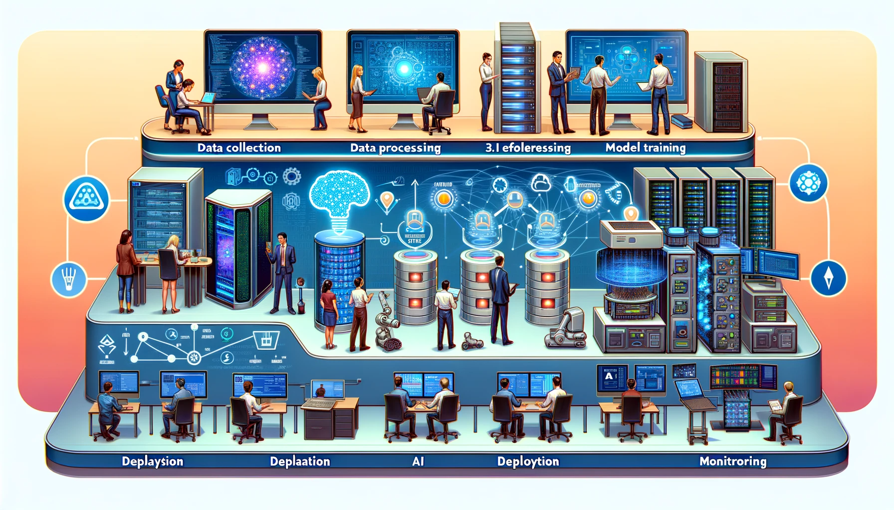

13 Operazioni di ML
Risorse: Slide, Video, Esercizi, Laboratori

Questo capitolo esplora le pratiche e le architetture necessarie per sviluppare, distribuire e gestire efficacemente i modelli ML durante il loro intero ciclo di vita. Esaminiamo le varie fasi del processo ML, tra cui raccolta dati, addestramento del modello, valutazione, distribuzione e monitoraggio. Anche l’importanza dell’automazione, della collaborazione e del miglioramento continuo è un argomento di cui discutiamo. Mettiamo a confronto diversi ambienti per la distribuzione del modello ML, dai server cloud ai dispositivi edge embedded, e analizziamo i loro vincoli distinti. Mostriamo come personalizzare la progettazione e le operazioni del sistema ML attraverso esempi concreti per prestazioni del modello affidabili e ottimizzate in qualsiasi ambiente target. L’obiettivo è fornire ai lettori una comprensione completa della gestione del modello ML in modo che possano creare ed eseguire con successo applicazioni ML che forniscano valore in modo sostenibile.
Capire cos’è MLOps e perché è necessario
Imparare i modelli architetturali per MLOps tradizionali
Confrontare MLOps tradizionali con MLOps embedded nel ciclo di vita ML
Identificare i vincoli chiave degli ambienti embedded
Imparare strategie per mitigare i problemi del ML embedded
Esaminare casi di studio del mondo reale che dimostrano i principi MLOps embedded
Apprezzare la necessità di approcci olistici tecnici e umani
13.1 Introduzione
Machine Learning Operations (MLOps) è un approccio sistematico che combina machine learning (ML), data science e ingegneria del software per automatizzare il ciclo di vita end-to-end di ML. Ciò include tutto, dalla preparazione dei dati e dal training del modello alla distribuzione e alla manutenzione. MLOps garantisce che i modelli ML siano sviluppati, distribuiti e mantenuti in modo efficiente ed efficace.
Cominciamo prendendo un caso di esempio generale (ad esempio, ML non edge). Prendiamo in considerazione un’azienda di “ride sharing” che desidera distribuire un modello di machine learning per prevedere la domanda dei passeggeri in tempo reale. Il team di data science impiega mesi per sviluppare un modello, ma quando è il momento di distribuirlo, si rende conto che deve essere compatibile con l’ambiente di produzione del team di ingegneria. La distribuzione del modello richiede la ricostruzione da zero, il che comporta settimane di lavoro aggiuntivo. È qui che entra in gioco MLOps.
Con MLOps, protocolli e strumenti, il modello sviluppato dal team di data science può essere distribuito e integrato senza problemi nell’ambiente di produzione. In sostanza, MLOps elimina gli attriti durante lo sviluppo, la distribuzione e la manutenzione dei sistemi ML. Migliora la collaborazione tra i team tramite flussi di lavoro e interfacce definiti. MLOps accelera anche la velocità di iterazione consentendo la distribuzione continua per i modelli ML.
Per l’azienda di ride sharing, implementare MLOps significa che il loro modello di previsione della domanda può essere frequentemente riqualificato e distribuito in base ai nuovi dati in arrivo. Ciò mantiene il modello accurato nonostante il cambiamento del comportamento del passeggero. MLOps consente inoltre all’azienda di sperimentare nuove tecniche di modellazione poiché i modelli possono essere rapidamente testati e aggiornati.
Altri vantaggi di MLOps includono il monitoraggio avanzato della discendenza del modello, la riproducibilità e l’auditing. La catalogazione dei flussi di lavoro ML e la standardizzazione degli artefatti, come il logging delle versioni del modello, il monitoraggio della discendenza dei dati e il confezionamento di modelli e parametri, consente una visione più approfondita della provenienza del modello. La standardizzazione di questi artefatti facilita la tracciabilità di un modello fino alle sue origini, la replica del processo di sviluppo del modello e l’esame di come una versione del modello è cambiata nel tempo. Ciò facilita anche la conformità alle normative, che è particolarmente critica in settori regolamentati come sanità e finanza, dove è importante essere in grado di verificare e spiegare i modelli.
Le principali organizzazioni adottano MLOps per aumentare la produttività, aumentare la collaborazione e accelerare i risultati ML. Fornisce i framework, gli strumenti e le best practice per gestire efficacemente i sistemi ML durante il loro ciclo di vita. Ciò si traduce in modelli più performanti, tempi di realizzazione più rapidi e un vantaggio competitivo duraturo. Mentre esploriamo ulteriormente MLOps, si consideri come l’implementazione di queste pratiche può aiutare ad affrontare le sfide ML embedded oggi e in futuro.
13.2 Contesto Storico
MLOps affonda le sue radici in DevOps, un insieme di pratiche che combinano sviluppo software (Dev) e operazioni IT (Ops) per accorciare il ciclo di vita dello sviluppo e fornire una distribuzione “continua” di software di alta qualità. I parallelismi tra MLOps e DevOps sono evidenti nella loro attenzione all’automazione, alla collaborazione e al miglioramento continuo. In entrambi i casi, l’obiettivo è quello di abbattere i “silos” tra i diversi team (sviluppatori, operazioni e, nel caso di MLOps, data scientist e ingegneri ML) e creare un processo più snello ed efficiente. È utile comprendere meglio la storia di questa evoluzione per comprendere MLOps nel contesto dei sistemi tradizionali.
13.2.1 DevOps
Il termine “DevOps” è stato coniato per la prima volta nel 2009 da Patrick Debois, un consulente e professionista Agile. Debois ha organizzato la prima conferenza DevOpsDays a Ghent, in Belgio, nel 2009. La conferenza ha riunito professionisti dello sviluppo e delle operazioni per discutere di modi per migliorare la collaborazione e automatizzare i processi.
DevOps ha le sue radici nel movimento Agile, iniziato nei primi anni 2000. Agile ha fornito le basi per un approccio più collaborativo allo sviluppo software e ha enfatizzato le piccole release iterative. Tuttavia, Agile si concentra principalmente sulla collaborazione tra team di sviluppo. Man mano che le metodologie Agile diventavano più popolari, le organizzazioni si sono rese conto della necessità di estendere questa collaborazione ai team operativi.
La natura isolata dei team di sviluppo e delle operazioni ha spesso portato a inefficienze, conflitti e ritardi nella distribuzione del software. Questa necessità di una migliore collaborazione e integrazione tra questi team ha portato al movimento DevOps. DevOps può essere visto come un’estensione dei principi Agile, inclusi i team operativi.
I principi chiave di DevOps includono collaborazione, automazione, integrazione continua, distribuzione e feedback. DevOps si concentra sull’automazione dell’intera pipeline di distribuzione del software, dallo sviluppo alla distribuzione. Migliora la collaborazione tra i team di sviluppo e operativi, utilizzando strumenti come Jenkins, Docker e Kubernetes per semplificare il ciclo di vita dello sviluppo.
Mentre Agile e DevOps condividono principi comuni in materia di collaborazione e feedback, DevOps mira specificamente all’integrazione di sviluppo e operazioni IT, espandendo Agile oltre i soli team di sviluppo. Introduce pratiche e strumenti per automatizzare la distribuzione del software e migliorare la velocità e la qualità delle release del software.
13.2.2 MLOps
MLOps, d’altro canto, sta per Machine Learning Operations ed estende i principi di DevOps al ciclo di vita ML. MLOps automatizza e semplifica l’intero ciclo di vita dell’apprendimento automatico, dalla preparazione dei dati allo sviluppo del modello, fino all’implementazione e al monitoraggio. L’obiettivo principale di MLOps è facilitare la collaborazione tra data scientist, data engineer e operazioni IT e automatizzare la distribuzione, il monitoraggio e la gestione dei modelli ML. Alcuni fattori chiave hanno portato all’ascesa di MLOps.
- Data drift: La deriva dei dati degrada le prestazioni del modello nel tempo, motivando la necessità di rigorosi monitoraggi e procedure di riqualificazione automatizzate fornite da MLOps.
- Riproducibilità: La mancanza di riproducibilità negli esperimenti di machine learning ha motivato i sistemi MLOps a tracciare codice, dati e variabili di ambiente per abilitare flussi di lavoro ML riproducibili.
- Spiegabilità: La natura di “scatola nera” e la mancanza di spiegabilità di modelli complessi hanno motivato la necessità di funzionalità MLOps per aumentare la trasparenza e la spiegabilità del modello.
- Monitoraggio: L’incapacità di monitorare in modo affidabile le prestazioni del modello dopo la distribuzione ha evidenziato la necessità di soluzioni MLOps con una solida strumentazione delle prestazioni del modello e avvisi.
- Attrito: L’attrito nel riaddestramento e nella distribuzione manuale dei modelli ha motivato la necessità di sistemi MLOps che automatizzano le pipeline di distribuzione dell’apprendimento automatico.
- Ottimizzazione: La complessità della configurazione dell’infrastruttura di apprendimento automatico ha motivato la necessità di piattaforme MLOps con un’infrastruttura ML ottimizzata e pronta all’uso.
Sebbene DevOps e MLOps condividano l’obiettivo comune di automatizzare e semplificare i processi, differiscono significativamente in termini di attenzione e sfide. DevOps si occupa principalmente di sviluppo software e operazioni IT. Consente la collaborazione tra questi team e automatizza la distribuzione del software. Al contrario, MLOps si concentra sul ciclo di vita dell’apprendimento automatico. Affronta complessità aggiuntive come versioning dei dati, versioning dei modelli e monitoraggio dei modelli. MLOps richiede la collaborazione tra una gamma più ampia di stakeholder, tra cui data scientist, data engineer e IT operations. Va oltre l’ambito del DevOps tradizionale incorporando le sfide uniche della gestione dei modelli ML durante il loro ciclo di vita. Tabella 13.1 fornisce un confronto affiancato di DevOps e MLOps, evidenziandone le principali differenze e somiglianze.
| Aspect | DevOps | MLOps |
|---|---|---|
| Obiettivo | Semplificazione dei processi di sviluppo software e operativi | Ottimizzazione del ciclo di vita dei modelli di apprendimento automatico |
| Metodologia | Integrazione continua e distribuzione continua (CI/CD) per lo sviluppo software | Simile a CI/CD ma incentrato sui flussi di lavoro di apprendimento automatico |
| Strumenti Principali | Controllo delle versioni (Git), strumenti CI/CD (Jenkins, Travis CI), gestione della configurazione (Ansible, Puppet) | Strumenti di versioning dei dati, strumenti di training e deployment dei modelli, pipeline CI/CD su misura per ML |
| Problemi Principali | Integrazione del codice, test, gestione delle release, automazione, infrastruttura come codice | Gestione dei dati, versioning dei modelli, monitoraggio degli esperimenti, deployment dei modelli, scalabilità dei flussi di lavoro ML |
| Risultati Tipici | Release software più rapide e affidabili, collaborazione migliorata tra team di sviluppo e operativi | Gestione e deployment efficienti dei modelli di apprendimento automatico, collaborazione migliorata tra data scientist e ingegneri |
Scoprire di più sui cicli di vita ML tramite un “case study” che presenta il riconoscimento vocale in Video 13.1.
13.3 Componenti Chiave di MLOps
In questo capitolo, forniremo una panoramica dei componenti principali di MLOps, un set emergente di pratiche che consente una distribuzione solida e una gestione del ciclo di vita dei modelli ML in produzione. Sebbene alcuni elementi MLOps, come l’automazione e il monitoraggio, siano stati trattati nei capitoli precedenti, li integreremo in un framework e approfondiremo funzionalità aggiuntive, come la governance. Inoltre, descriveremo e collegheremo gli strumenti più diffusi utilizzati in ogni componente, come LabelStudio per l’etichettatura dei dati. Alla fine, speriamo che abbiate compreso la metodologia MLOps end-to-end che porta i modelli dall’ideazione alla creazione di valore sostenibile all’interno delle organizzazioni.
Figura 13.1 mostra lo stack di sistema MLOps. Il ciclo di vita MLOps inizia dalla gestione dei dati e dalle pipeline CI/CD per lo sviluppo del modello. I modelli sviluppati passano attraverso il training e la valutazione del modello. Una volta addestrati alla convergenza, la distribuzione del modello porta i modelli in produzione e pronti per essere serviti. Dopo la distribuzione, il servizio del modello reagisce alle modifiche del carico di lavoro e soddisfa gli accordi sul livello di servizio in modo economicamente conveniente quando serve milioni di utenti finali o applicazioni AI. La gestione dell’infrastruttura garantisce che le risorse necessarie siano disponibili e ottimizzate durante l’intero ciclo di vita. Monitoraggio continuo, governance, comunicazione e collaborazione sono i restanti elementi di MLOps per garantire uno sviluppo e un funzionamento senza interruzioni dei modelli ML.

13.3.1 Gestione dei Dati
Una gestione dei dati solida e l’ingegneria dei dati potenziano attivamente implementazioni MLOps di successo. I team acquisiscono, archiviano e preparano correttamente i dati grezzi da sensori, database, app e altri sistemi per il training e la distribuzione dei modelli.
I team monitorano attivamente le modifiche ai set di dati nel tempo utilizzando il controllo delle versioni con Git e strumenti come GitHub o GitLab. Gli scienziati dei dati collaborano alla cura dei set di dati unendo le modifiche di più collaboratori. I team possono rivedere o ripristinare ogni iterazione di un set di dati, se necessario.
I team etichettano e annotano meticolosamente i dati utilizzando un software di etichettatura come LabelStudio, che consente ai team distribuiti di lavorare insieme all’etichettatura dei set di dati. Man mano che le variabili target e le convenzioni di etichettatura si evolvono, i team mantengono l’accessibilità alle versioni precedenti.
I team archiviano il set di dati non elaborato e tutte le risorse derivate su servizi cloud come Amazon S3 o Google Cloud Storage. Questi servizi forniscono un’archiviazione scalabile e resiliente con funzionalità di controllo delle versioni. I team possono impostare autorizzazioni di accesso granulari.
Le pipeline di dati robuste create dai team automatizzano l’estrazione, l’unione, la pulizia e la trasformazione dei dati grezzi in set di dati pronti per l’analisi. Prefect, Apache Airflow e dbt sono orchestratori di flussi di lavoro che consentono agli ingegneri di sviluppare pipeline di elaborazione dati flessibili e riutilizzabili.
Ad esempio, una pipeline può acquisire dati da database PostgreSQL, API REST e CSV archiviati su S3 [Simple Storage Service]. Può filtrare, deduplicare e aggregare i dati, gestire gli errori e salvare l’output su S3. La pipeline può anche spingere i dati trasformati in un feature store come Tecton o Feast per un accesso a bassa latenza.
In un caso d’uso di manutenzione predittiva industriale, i dati dei sensori vengono acquisiti dai dispositivi in S3. Una pipeline perfetta elabora i dati dei sensori, unendoli ai record di manutenzione. Il set di dati arricchito è archiviato in Feast in modo che i modelli possano recuperare facilmente i dati più recenti per l’addestramento e le previsioni.
Video 13.2 di seguito riporta una breve panoramica delle pipeline di dati.
13.3.2 Pipeline CI/CD
Le pipeline di integrazione continua e distribuzione continua (CI/CD) automatizzano attivamente la progressione dei modelli ML dallo sviluppo iniziale alla distribuzione in produzione. Adattati per i sistemi ML, i principi CI/CD consentono ai team di distribuire rapidamente e in modo robusto nuovi modelli con errori manuali ridotti al minimo.
Le pipeline CI/CD orchestrano i passaggi chiave, tra cui il controllo delle nuove modifiche al codice, la trasformazione dei dati, il training e la registrazione di nuovi modelli, i test di convalida, la containerizzazione, la distribuzione in ambienti come cluster di staging e la promozione in produzione. I team sfruttano le soluzioni CI/CD più diffuse come Jenkins, CircleCI e GitHub Actions per eseguire queste pipeline MLOps, mentre Prefect, Metaflow e Kubeflow offrono opzioni incentrate su ML.
Figura 13.2 illustra una pipeline CI/CD specificamente pensata per MLOps. Il processo inizia con un dataset e un repository di feature (a sinistra), che alimenta una fase di ingestione del dataset. Dopo l’ingestione, i dati vengono sottoposti a convalida per garantirne la qualità prima di essere trasformati per l’addestramento. Parallelamente, un trigger di riaddestramento può avviare la pipeline in base a criteri specificati. I dati passano poi attraverso una fase di addestramento/ottimizzazione del modello all’interno di un motore di elaborazione dati, seguita dalla valutazione e convalida del modello. Una volta convalidato, il modello viene registrato e archiviato in un repository di metadati e artefatti di apprendimento automatico. La fase finale prevede la distribuzione del modello addestrato nuovamente nel dataset e nel repository di feature, creando così un processo ciclico per il miglioramento continuo e la distribuzione di modelli di apprendimento automatico.
Ad esempio, quando uno scienziato dei dati verifica i miglioramenti a un modello di classificazione delle immagini in un repository GitHub, questo attiva attivamente una pipeline CI/CD Jenkins. La pipeline riesegue le trasformazioni dei dati e l’addestramento del modello sui dati più recenti, monitorando gli esperimenti con MLflow. Dopo i test di validazione automatizzati, i team distribuiscono il contenitore del modello in un cluster di staging Kubernetes per un ulteriore controllo qualità. Una volta approvato, Jenkins facilita un rollout graduale del modello in produzione con distribuzioni canary per rilevare eventuali problemi. Se vengono rilevate anomalie, la pipeline consente ai team di tornare alla versione precedente del modello in modo fluido.
Le pipeline CI/CD consentono ai team di iterare e distribuire rapidamente modelli ML collegando i diversi passaggi dallo sviluppo alla distribuzione con automazione continua. L’integrazione di strumenti MLOps come MLflow migliora il packaging del modello, il controllo delle versioni e la tracciabilità della pipeline. CI/CD è fondamentale per far progredire i modelli oltre i prototipi in sistemi aziendali sostenibili.
13.3.3 Addestramento del Modello
Nella fase di training del modello, gli scienziati dei dati sperimentano attivamente diverse architetture e algoritmi ML per creare modelli ottimizzati che estraggono informazioni e modelli dai dati. MLOps introduce best practice e automazione per rendere questo processo iterativo più efficiente e riproducibile.
I moderni framework ML come TensorFlow, PyTorch e Keras forniscono componenti predefiniti che semplificano la progettazione di reti neurali e altre architetture di modelli. Gli scienziati dei dati sfruttano moduli integrati per layer, attivazioni, perdite, ecc. e API di alto livello come Keras per concentrarsi maggiormente sull’architettura del modello.
MLOps consente ai team di impacchettare il codice di training del modello in script e notebook riutilizzabili e tracciati. Man mano che i modelli vengono sviluppati, funzionalità come ottimizzazione degli iperparametri, ricerca dell’architettura neurale e selezione automatica delle funzionalità si ripetono rapidamente per trovare le configurazioni più performanti.
I team utilizzano Git per controllare le versioni del codice di training e ospitarlo in repository come GitHub per tenere traccia delle modifiche nel tempo. Ciò consente una collaborazione fluida tra i data scientist.
Notebook come Jupyter creano un eccellente ambiente di sviluppo di modelli interattivi. I notebook contengono l’inserimento dei dati, la pre-elaborazione, la dichiarazione del modello, il ciclo di training, la valutazione e il codice di esportazione in un documento riproducibile.
Infine, i team orchestrano il training del modello come parte di una pipeline CI/CD per l’automazione. Ad esempio, una pipeline Jenkins può attivare uno script Python per caricare nuovi dati di training, riaddestrare un classificatore TensorFlow, valutare le metriche del modello e registrare automaticamente il modello se vengono raggiunte le soglie di prestazione.
Un esempio di flusso di lavoro prevede che uno scienziato dei dati utilizzi un notebook PyTorch per sviluppare un modello CNN per la classificazione delle immagini. La libreria fastai fornisce API di alto livello per semplificare l’addestramento delle CNN sui set di dati delle immagini. Il notebook addestra il modello sui dati campione, valuta le metriche di accuratezza e ottimizza gli iperparametri come la velocità di apprendimento e i layer per ottimizzare le prestazioni. Questo notebook riproducibile è controllato dalla versione e integrato in una pipeline di riaddestramento.
L’automazione e la standardizzazione dell’addestramento del modello consentono ai team di accelerare la sperimentazione e raggiungere il rigore necessario per produrre sistemi ML.
13.3.4 Valutazione del Modello
Prima di distribuire i modelli, i team eseguono una valutazione e dei test rigorosi per convalidare i benchmark delle prestazioni e la prontezza per il rilascio. MLOps introduce le best practice relative alla convalida, all’audit e ai test canary dei modelli.
In genere, i team valutano i modelli rispetto ai dataset di test di holdout che non vengono utilizzati durante il training. I dati di test provengono dalla stessa distribuzione dei dati di produzione. I team calcolano metriche come accuratezza, AUC, precisione, richiamo e punteggio F1.
I team monitorano inoltre le stesse metriche nel tempo rispetto ai campioni di dati di test. Se i dati di valutazione provengono da flussi di produzione live, questo rileva le derive dei dati che degradano le prestazioni del modello nel tempo.
La supervisione umana per il rilascio del modello rimane importante. Gli scienziati dei dati esaminano le prestazioni nei segmenti e nelle sezioni chiave. L’analisi degli errori aiuta a identificare i punti deboli del modello per guidare il miglioramento. team applicano tecniche di equità e rilevamento di bias.
Il test Canary rilascia un modello a un piccolo sottoinsieme di utenti per valutare le prestazioni nel mondo reale prima di un’ampia distribuzione. I team indirizzano gradualmente il traffico alla versione canary monitorando i problemi.
Ad esempio, un rivenditore valuta un modello di raccomandazione di prodotto personalizzato rispetto ai dati di test storici, esaminando le metriche di accuratezza e diversità. I team calcolano anche le metriche sui dati dei clienti in tempo reale nel tempo, rilevando una riduzione dell’accuratezza nelle ultime 2 settimane. Prima dell’implementazione completa, il nuovo modello viene rilasciato al 5% del traffico web per garantire che non vi sia alcun degrado.
L’automazione della valutazione e delle versioni canary riduce i rischi di distribuzione. Tuttavia, la revisione umana deve ancora essere più critica per valutare le dinamiche meno quantificabili del comportamento del modello. Una rigorosa convalida pre-distribuzione fornisce sicurezza nell’immissione dei modelli in produzione.
13.3.5 Distribuzione del Modello
I team devono confezionare, testare e tracciare correttamente i modelli ML per distribuirli in modo affidabile in produzione. MLOps introduce framework e procedure per il versioning attivo, la distribuzione, il monitoraggio e l’aggiornamento dei modelli in modi sostenibili.
I team containerizzano i modelli utilizzando Docker, che raggruppa codice, librerie e dipendenze in un’unità standardizzata. I container consentono una portabilità fluida tra gli ambienti.
Framework come TensorFlow Serving e BentoML aiutano a servire le previsioni dai modelli distribuiti tramite API ottimizzate per le prestazioni. Questi framework gestiscono il versioning, il ridimensionamento e il monitoraggio.
I team distribuiscono prima i modelli aggiornati in ambienti di staging o QA per i test prima del rollout completo in produzione. Le distribuzioni shadow o canary instradano un campione di traffico per testare le varianti del modello. I team aumentano gradualmente l’accesso ai nuovi modelli.
I team creano solide procedure di rollback nel caso in cui emergano problemi. I rollback ripristinano l’ultima versione valida del modello. L’integrazione con pipeline CI/CD semplifica la ridistribuzione, se necessario.
I team monitorano attentamente gli artefatti del modello, come script, pesi, log e metriche, per ogni versione con strumenti di metadati ML come MLflow. Ciò mantiene la discendenza e la verificabilità.
Ad esempio, un rivenditore inserisce in un “contenitore” un modello di raccomandazione di prodotto in TensorFlow Serving e lo distribuisce in un cluster di staging Kubernetes. Dopo aver monitorato e approvato le prestazioni sul traffico di esempio, Kubernetes sposta il 10% del traffico di produzione al nuovo modello. Se non vengono rilevati problemi dopo alcuni giorni, il nuovo modello occupa il 100% del traffico. Tuttavia, i team dovrebbero mantenere la versione precedente accessibile per il rollback, se necessario.
I processi di distribuzione del modello consentono ai team di rendere i sistemi ML resilienti in produzione tenendo conto di tutti gli stati di transizione.
13.3.6 Model Serving
Dopo il “deployment” [distribuzione] del modello, ML-as-a-Service diventa un componente fondamentale nel ciclo di vita di MLOps. I servizi online come Facebook/Meta gestiscono decine di trilioni di query di inferenza al giorno (Wu et al. 2019). Il “model serving” colma il divario tra i modelli sviluppati e le applicazioni ML o gli utenti finali, assicurando che i modelli distribuiti siano accessibili, performanti e scalabili negli ambienti di produzione.
Diversi framework facilitano il model serving, tra cui TensorFlow Serving, NVIDIA Triton Inference Server e KServe (in precedenza KFServing). Questi strumenti forniscono interfacce standardizzate per la distribuzione di modelli distribuiti su varie piattaforme e gestiscono molte complessità dell’inferenza del modello su larga scala.
Il model serving può essere categorizzato in tre tipi principali:
- Online Serving: Fornisce previsioni in tempo reale con bassa latenza, il che è fondamentale per applicazioni come sistemi di raccomandazione o rilevamento frodi.
- Offline Serving: Elabora grandi batch di dati in modo asincrono, adatto per attività come la generazione periodica di report.
- Near-Online Serving (semi-sincrono): Bilancia tra online e offline, offrendo risposte relativamente rapide per applicazioni meno sensibili al tempo come i chatbot.
Una delle sfide principali per i sistemi di model serving è operare secondo requisiti di prestazioni definiti da Service Level Agreement (SLA) e Service Level Objective (SLO). Gli SLA sono contratti formali che specificano i livelli di servizio previsti. Questi livelli di servizio si basano su parametri quali tempo di risposta, disponibilità e produttività. Gli SLO sono obiettivi interni che i team si prefiggono di soddisfare o superare i propri SLA.
Per il model serving ML, gli accordi e gli obiettivi SLA e SLO hanno un impatto diretto sull’esperienza utente, sull’affidabilità del sistema e sui risultati aziendali. Pertanto, i team ottimizzano attentamente la propria piattaforma di servizio. I serving system ML impiegano varie tecniche per ottimizzare le prestazioni e l’utilizzo delle risorse, come le seguenti:
- Pianificazione e batch delle richieste: Gestisce in modo efficiente le richieste di inferenza ML in arrivo, ottimizzando le prestazioni tramite strategie di accodamento e raggruppamento intelligenti. Sistemi come Clipper (Crankshaw et al. 2017) introducono il servizio di previsione online a bassa latenza con tecniche di caching e batch.
- Selezione e routing delle istanze del modello: Algoritmi intelligenti indirizzano le richieste alle versioni o alle istanze del modello appropriate. INFaaS (Romero et al. 2021) esplora questo aspetto generando varianti del modello e navigando in modo efficiente nello spazio di compromesso in base ai requisiti di prestazioni e accuratezza.
- Bilanciamento del carico: Distribuisce i carichi di lavoro in modo uniforme su più istanze di servizio. MArk (Model Ark) (C. Zhang et al. 2019) dimostra tecniche efficaci di bilanciamento del carico per sistemi di servizio ML.
- Autoscaling delle istanze del modello: Regola dinamicamente la capacità in base alla domanda. Sia INFaaS (Romero et al. 2021) che MArk (C. Zhang et al. 2019) incorporano funzionalità di autoscaling per gestire in modo efficiente le fluttuazioni del carico di lavoro.
- Orchestration del modello: Gestisce l’esecuzione del modello, abilitando l’elaborazione parallela e l’allocazione strategica delle risorse. AlpaServe (Z. Li et al. 2023) dimostra tecniche avanzate per la gestione di modelli di grandi dimensioni e scenari di servizio complessi.
- Previsione del tempo di esecuzione: Sistemi come Clockwork (Gujarati et al. 2020) si concentrano sul servizio ad alte prestazioni prevedendo i tempi di esecuzione delle singole inferenze e utilizzando in modo efficiente gli acceleratori hardware.
I serving system ML che eccellono in queste aree consentono alle organizzazioni di distribuire modelli che funzionano in modo affidabile sotto pressione. Il risultato sono applicazioni AI scalabili e reattive in grado di gestire le richieste del mondo reale e fornire valore in modo coerente.
13.3.7 Gestione dell’Infrastruttura
I team MLOps sfruttano ampiamente gli strumenti “infrastructure as code (IaC)” e le solide architetture cloud per gestire attivamente le risorse necessarie per lo sviluppo, il training e la distribuzione dei sistemi ML.
I team utilizzano strumenti IaC come Terraform, CloudFormation e Ansible per definire, fornire e aggiornare a livello di programmazione l’infrastruttura in modo controllato dalla versione. Per MLOps, i team utilizzano ampiamente Terraform per avviare risorse su AWS, GCP e Azure.
Per la creazione e il training dei modelli, i team forniscono dinamicamente risorse di elaborazione come server GPU, cluster di container, storage e database tramite Terraform in base alle esigenze degli scienziati dei dati. Il codice incapsula e preserva le definizioni dell’infrastruttura.
I container e gli orchestratori come Docker e Kubernetes consentono ai team di impacchettare modelli e distribuirli in modo affidabile in diversi ambienti. I contenitori possono essere attivati o disattivati automaticamente in base alla domanda.
Sfruttando l’elasticità del cloud, i team aumentano o diminuiscono le risorse per soddisfare i picchi nei carichi di lavoro come i lavori di ottimizzazione degli iperparametri o i picchi nelle richieste di previsione. Auto-scaling consente un’efficienza dei costi ottimizzata.
L’infrastruttura si estende su dispositivi on-prem, cloud ed edge. Uno stack tecnologico robusto offre flessibilità e resilienza. Gli strumenti di monitoraggio consentono ai team di osservare l’utilizzo delle risorse.
Ad esempio, una configurazione Terraform può distribuire un cluster GCP Kubernetes per ospitare modelli TensorFlow addestrati esposti come microservizi di previsione. Il cluster aumenta i pod per gestire un traffico maggiore. L’integrazione CI/CD distribuisce senza problemi nuovi contenitori di modelli.
La gestione attenta dell’infrastruttura tramite IaC e monitoraggio consente ai team di prevenire i colli di bottiglia nell’operatività dei sistemi ML su larga scala.
13.3.8 Monitoraggio
I team MLOps mantengono attivamente un monitoraggio robusto per mantenere la visibilità nei modelli ML distribuiti in produzione. Il monitoraggio continuo fornisce informazioni sulle prestazioni del modello e del sistema in modo che i team possano rilevare e risolvere rapidamente i problemi per ridurre al minimo le interruzioni.
I team monitorano attivamente gli aspetti chiave del modello, inclusa l’analisi di campioni di previsioni live per tracciare metriche come accuratezza e matrice di confusione nel tempo.
Quando monitorano le prestazioni, i team devono profilare i dati in arrivo per verificare la deriva del modello, un calo costante dell’accuratezza del modello dopo l’implementazione in produzione. La deriva del modello può verificarsi in due modi: deriva del concetto e deriva dei dati. La deriva del concetto si riferisce a un cambiamento fondamentale osservato nella relazione tra i dati di input e quelli target. Ad esempio, con l’avanzare della pandemia di COVID-19, i siti di e-commerce e vendita al dettaglio hanno dovuto correggere le raccomandazioni del modello poiché i dati di acquisto erano ampiamente distorti verso articoli come il disinfettante per le mani. La deriva dei dati descrive i cambiamenti nella distribuzione dei dati nel tempo. Ad esempio, gli algoritmi di riconoscimento delle immagini utilizzati nelle auto a guida autonoma devono tenere conto della stagionalità nell’osservazione dell’ambiente circostante. I team monitorano anche le metriche delle prestazioni delle applicazioni come latenza ed errori per le integrazioni dei modelli.
Da una prospettiva infrastrutturale, i team monitorano i problemi di capacità come elevato utilizzo di CPU, memoria e disco e interruzioni del sistema. Strumenti come Prometheus, Grafana ed Elastic consentono ai team di raccogliere, analizzare, interrogare e visualizzare attivamente diverse metriche di monitoraggio. Le dashboard rendono le dinamiche altamente visibili.
I team configurano gli allarmi per le metriche di monitoraggio chiave come cali di accuratezza e guasti del sistema per consentire una risposta proattiva agli eventi che minacciano l’affidabilità. Ad esempio, i cali di accuratezza del modello attivano avvisi per i team per esaminare potenziali deviazioni dei dati e riaddestrare i modelli utilizzando campioni di dati aggiornati e rappresentativi.
Dopo la distribuzione, il monitoraggio completo consente ai team di mantenere la fiducia nello stato del modello e del sistema. Consente ai team di rilevare e risolvere preventivamente le deviazioni tramite allarmi e dashboard basati sui dati. Il monitoraggio attivo è essenziale per mantenere sistemi ML altamente disponibili e affidabili.
Guardare il video qui sotto per saperne di più sul monitoraggio.
13.3.9 Governance
I team MLOps stabiliscono attivamente pratiche di governance appropriate come componente fondamentale. La governance fornisce una supervisione sui modelli ML per garantire che siano affidabili, etici e conformi. Senza governance, sussistono rischi significativi di modelli che si comportano in modi pericolosi o proibiti quando vengono distribuiti in applicazioni e processi aziendali.
La governance MLOps impiega tecniche per fornire trasparenza sulle previsioni, sulle prestazioni e sul comportamento del modello durante l’intero ciclo di vita ML. Metodi di spiegabilità come SHAP e LIME aiutano gli auditor a comprendere perché i modelli effettuano determinate previsioni evidenziando le caratteristiche di input influenti alla base delle decisioni. Bias detection analizza le prestazioni del modello in diversi gruppi demografici definiti da attributi come età, sesso ed etnia per rilevare eventuali distorsioni sistematiche. I team eseguono rigorose procedure di test su set di dati rappresentativi per convalidare le prestazioni del modello prima della distribuzione.
Una volta in produzione, i team monitorano la concept drift [deriva del concetto] per determinare se le relazioni predittive cambiano nel tempo in modi che degradano l’accuratezza del modello. I team analizzano anche i registri di produzione per scoprire modelli nei tipi di errori generati dai modelli. La documentazione sulla provenienza dei dati, le procedure di sviluppo e le metriche di valutazione fornisce ulteriore visibilità.
Piattaforme come Watson OpenScale incorporano funzionalità di governance come il monitoraggio dei bias e la spiegabilità direttamente nella creazione di modelli, nei test e nel monitoraggio della produzione. Le aree di interesse principali della governance sono trasparenza, correttezza e conformità. Ciò riduce al minimo i rischi che i modelli si comportino in modo errato o pericoloso quando integrati nei processi aziendali. L’integrazione di pratiche di governance nei flussi di lavoro MLOps consente ai team di garantire un’IA affidabile.
13.3.10 Comunicazione e Collaborazione
MLOps abbatte attivamente i “silos” e consente il libero flusso di informazioni e approfondimenti tra i team in tutte le fasi del ciclo di vita ML. Strumenti come MLflow, Weights & Biases e contesti di dati forniscono tracciabilità e visibilità per migliorare la collaborazione.
I team utilizzano MLflow per sistematizzare il monitoraggio di esperimenti, versioni e artefatti del modello. Gli esperimenti possono essere loggati a livello di programmazione da notebook di data science e job di training. Il registro dei modelli fornisce un hub centrale per i team per archiviare modelli pronti per la produzione prima della distribuzione, con metadati come descrizioni, metriche, tag e discendenza. Le integrazioni con Github, GitLab facilitano i trigger per la modifica del codice.
“Weights & Biases” fornisce strumenti collaborativi su misura per i team ML. Gli scienziati dei dati registrano gli esperimenti, visualizzano metriche come curve di perdita e condividono approfondimenti sulla sperimentazione con i colleghi. Le dashboard di confronto evidenziano le differenze del modello. I team discutono dei progressi e dei passaggi successivi.
La definizione di contesti di dati condivisi, ovvero glossari, dizionari di dati e riferimenti di schemi, garantisce l’allineamento del significato e dell’utilizzo dei dati tra i ruoli. La documentazione aiuta a comprendere chi non ha accesso diretto ai dati.
Ad esempio, uno scienziato dei dati può utilizzare “Weights & Biases” per analizzare un esperimento con un modello di rilevamento delle anomalie e condividere i risultati della valutazione con altri membri del team per discutere dei miglioramenti. Il modello finale può quindi essere registrato con MLflow prima di essere consegnato per la distribuzione.
L’abilitazione della trasparenza, della tracciabilità e della comunicazione tramite MLOps consente ai team di rimuovere i colli di bottiglia e accelerare la distribuzione di sistemi ML di impatto.
Video 13.4 affronta le sfide chiave nella distribuzione del modello, tra cui la deriva del concetto, la deriva del modello e i problemi di ingegneria del software.
13.4 Debito Tecnico Nascosto nei Sistemi ML
Il debito tecnico [https://it.wikipedia.org/wiki/Debito_tecnico] è sempre più pressante per i sistemi di apprendimento automatico. Questa metafora, originariamente proposta negli anni ’90, paragona i costi a lungo termine dello sviluppo rapido del software al debito finanziario. Proprio come un debito finanziario alimenta una crescita vantaggiosa, un debito tecnico gestito con attenzione consente una rapida iterazione. Tuttavia, se non controllato, l’accumulo di debito tecnico può superare qualsiasi guadagno.
Figura 13.3 illustra i vari componenti che contribuiscono al debito tecnico nascosto dei sistemi ML. Mostra la natura interconnessa di configurazione, raccolta dati ed estrazione di funzionalità, che è fondamentale per la base di codice ML. Le dimensioni delle caselle indicano la proporzione dell’intero sistema rappresentata da ciascun componente. Nei sistemi ML industriali, il codice per l’algoritmo del modello costituisce solo una piccola frazione (vedere la piccola casella nera al centro rispetto a tutte le altre caselle grandi). La complessità dei sistemi ML e la natura frenetica del settore rendono molto facile l’accumulo di debito tecnico.
13.4.1 Erosione dei Confini del Modello
A differenza del software tradizionale, ML non ha confini chiari tra i componenti, come si vede nel diagramma sopra. Questa erosione dell’astrazione crea intrecci che esacerbano il debito tecnico in diversi modi:
13.4.2 Intreccio
Un accoppiamento stretto tra i componenti del modello ML rende difficile isolare le modifiche. La modifica di una parte provoca effetti a catena imprevedibili in tutto il sistema. “Changing Anything Changes Everything (noto anche come CACE)” [Cambiare qualcosa cambia tutto] è un fenomeno che si applica a qualsiasi modifica apportata al sistema. Le potenziali mitigazioni includono la scomposizione del problema quando possibile o il monitoraggio ravvicinato delle modifiche nel comportamento per contenerne l’impatto.
13.4.3 Cascate di Correzione
Figura 13.4 illustra il concetto di cascate di correzione nel flusso di lavoro ML, dalla definizione del problema all’implementazione del modello. Gli archi rappresentano le potenziali correzioni iterative necessarie in ogni fase del flusso di lavoro, con colori diversi corrispondenti a problemi distinti come l’interazione con la fragilità del mondo fisico, competenze inadeguate nel dominio dell’applicazione, sistemi di ricompensa in conflitto e scarsa documentazione inter-organizzativa.
Le frecce rosse indicano l’impatto delle cascate, che possono portare a revisioni significative nel processo di sviluppo del modello. Al contrario, la linea rossa tratteggiata rappresenta la misura drastica di abbandono del processo per riavviarlo. Questa immagine sottolinea la natura complessa e interconnessa dello sviluppo del sistema ML e l’importanza di affrontare questi problemi all’inizio del ciclo di sviluppo per mitigare i loro effetti di amplificazione a valle.
La creazione di modelli in sequenza crea dipendenze rischiose in cui i modelli successivi si basano su quelli precedenti. Ad esempio, prendere un modello esistente e perfezionarlo per un nuovo caso d’uso sembra efficiente. Tuttavia, questo incorpora ipotesi dal modello originale che potrebbero eventualmente richiedere una correzione.
Diversi fattori influenzano la decisione di creare modelli in sequenza o meno:
- Dimensioni del dataset e tasso di crescita: Con set di dati statici e di piccole dimensioni, la messa a punto dei modelli esistenti ha spesso senso. Per set di dati di grandi dimensioni e in crescita, l’addestramento di modelli personalizzati da zero consente una maggiore flessibilità per tenere conto dei nuovi dati.
- Risorse di elaborazione disponibili: La messa a punto richiede meno risorse rispetto all’addestramento di modelli di grandi dimensioni da zero. Con risorse limitate, sfruttare i modelli esistenti potrebbe essere l’unico approccio fattibile.
Mentre la messa a punto dei modelli esistenti può essere efficiente, la modifica dei componenti fondamentali in seguito diventa estremamente costosa a causa di questi effetti a cascata. Pertanto, si dovrebbe considerare attentamente l’introduzione di nuove architetture di modelli, anche se ad alta intensità di risorse, per evitare cascate di correzioni in futuro. Questo approccio può aiutare ad attenuare gli effetti di amplificazione dei problemi a valle e a ridurre il debito tecnico. Tuttavia, ci sono ancora scenari in cui la creazione di modelli sequenziali ha senso, il che richiede un attento equilibrio tra efficienza, flessibilità e manutenibilità a lungo termine nel processo di sviluppo ML.
13.4.4 Consumatori Non Dichiarati
Una volta che le previsioni del modello ML sono rese disponibili, molti sistemi downstream [derivati] potrebbero utilizzarle silenziosamente come input per un’ulteriore elaborazione. Tuttavia, il modello originale non è stato progettato per adattarsi a questo ampio riutilizzo. A causa dell’opacità intrinseca dei sistemi ML, diventa impossibile analizzare completamente l’impatto degli output del modello come input altrove. Le modifiche al modello possono quindi avere conseguenze costose e pericolose interrompendo dipendenze non rilevate.
I “consumatori” non dichiarati possono anche abilitare loop di feedback nascosti se i loro output influenzano indirettamente i dati di training del modello originale. Le mitigazioni includono la limitazione dell’accesso alle previsioni, la definizione di contratti di servizio rigorosi e il monitoraggio di segnali di influenze non-modellate. Architettare sistemi ML per incapsulare e isolare i loro effetti limita i rischi di propagazione imprevista.
13.4.5 Debito di Dipendenza dai Dati
Il debito di dipendenza dei dati si riferisce a dipendenze di dati instabili e sottoutilizzate, che possono avere ripercussioni dannose e difficili da rilevare. Sebbene questo sia un fattore chiave del debito tecnologico per il software tradizionale, tali sistemi possono trarre vantaggio dall’uso di strumenti ampiamente disponibili per l’analisi statica da parte di compilatori e linker per identificare dipendenze di questo tipo. I sistemi ML necessitano di strumenti simili.
Una mitigazione per le dipendenze di dati instabili è l’uso del versioning, che garantisce la stabilità degli input ma comporta il costo della gestione di più set di dati e il potenziale della obsolescenza. Un’altra mitigazione per le dipendenze di dati sottoutilizzate è quella di condurre una valutazione esaustiva “leave-one-feature-out”.
13.4.6 Debito di Analisi dai Cicli di Feedback
A differenza del software tradizionale, i sistemi ML possono cambiare il loro comportamento nel tempo, rendendo difficile l’analisi pre-distribuzione. Questo debito si manifesta nei cicli di feedback, sia diretti che nascosti.
I cicli di feedback diretti si verificano quando un modello influenza i suoi input futuri, ad esempio consigliando prodotti agli utenti che, a loro volta, modellano i dati di training futuri. I cicli nascosti sorgono indirettamente tra modelli, ad esempio due sistemi che interagiscono tramite ambienti del mondo reale. I cicli di feedback graduali sono particolarmente difficili da rilevare. Questi cicli portano al debito di analisi, ovvero l’incapacità di prevedere come un modello agirà completamente dopo il rilascio. Essi compromettono la validazione pre-distribuzione consentendo un’autoinfluenza non modellata.
Un attento monitoraggio e distribuzioni “canary” aiutano a rilevare il feedback. Tuttavia, permangono sfide fondamentali nella comprensione delle interazioni complesse del modello. Le scelte architettoniche che riducono l’intreccio e l’accoppiamento mitigano l’effetto composto del debito di analisi.
13.4.7 Le Giungle di Pipeline
I workflow [flussi di lavoro] ML spesso necessitano di interfacce più standardizzate tra i componenti. Ciò porta i team a “incollare” gradualmente le pipeline con codice personalizzato. Ciò che emerge sono “giungle di pipeline”, ovvero passaggi di pre-elaborazione aggrovigliati che sono fragili e resistono al cambiamento. Evitare modifiche a queste pipeline disordinate fa sì che i team sperimentino attraverso prototipi alternativi. Presto, proliferano molteplici modi di fare. La necessità di astrazioni e interfacce impedisce quindi la condivisione, il riutilizzo e l’efficienza.
Il debito tecnico si accumula man mano che le pipeline si solidificano in vincoli legacy. I team sprecano tempo nella gestione di codice idiosincratico anziché massimizzare le prestazioni del modello. Principi architettonici come modularità e incapsulamento sono necessari per stabilire interfacce pulite. Le astrazioni condivise consentono componenti intercambiabili, impediscono il lock-in e promuovono la diffusione delle “best practice” tra i team. Liberarsi dalle “giungle di pipeline” richiede in definitiva l’applicazione di standard che impediscano l’accumulo di debito di astrazione. I vantaggi delle interfacce e delle API che domano la complessità superano i costi di transizione.
13.4.8 Debito di Configurazione
I sistemi ML comportano una configurazione estesa di iperparametri, architetture e altri parametri di ottimizzazione. Tuttavia, la configurazione è spesso un ripensamento, che necessita di più rigore e test: aumentano le configurazioni ad hoc, amplificate dalle numerose “manopole” disponibili per l’ottimizzazione di modelli ML complessi.
Questo accumulo di debito tecnico ha diverse conseguenze. Configurazioni fragili e obsolete portano a dipendenze nascoste e bug che causano guasti di produzione. La conoscenza sulle configurazioni ottimali è isolata anziché condivisa, portando a un lavoro ridondante. Riprodurre e confrontare i risultati diventa difficile quando le configurazioni mancano di documentazione. I vincoli legacy si accumulano poiché i team temono di modificare configurazioni poco comprese.
Per affrontare il debito di configurazione è necessario stabilire standard per documentare, testare, convalidare e archiviare centralmente le configurazioni. Investire in approcci più automatizzati, come l’ottimizzazione degli iperparametri e la ricerca dell’architettura, riduce la dipendenza dall’ottimizzazione manuale. Una migliore igiene della configurazione rende il miglioramento iterativo più gestibile impedendo alla complessità di aumentare all’infinito. La chiave è riconoscere la configurazione come parte integrante del ciclo di vita del sistema ML piuttosto che come un ripensamento ad hoc.
13.4.9 Il Mondo che Cambia
I sistemi ML operano in ambienti dinamici del mondo reale. Le soglie e le decisioni inizialmente efficaci diventano obsolete man mano che il mondo si evolve. Tuttavia, i vincoli legacy rendono difficile adattare i sistemi a popolazioni, modelli di utilizzo e altri fattori contestuali mutevoli.
Questo debito si manifesta in due modi principali. In primo luogo, le soglie preimpostate e le euristiche richiedono una rivalutazione e una messa a punto costanti man mano che i loro valori ottimali si spostano. In secondo luogo, la convalida dei sistemi tramite test statici di unità e integrazione fallisce quando input e comportamenti sono obiettivi in movimento.
Rispondere a un mondo in continua evoluzione in tempo reale con sistemi ML legacy è impegnativo. Il debito tecnico si accumula man mano che le ipotesi decadono. La mancanza di architettura modulare e la capacità di aggiornare dinamicamente i componenti senza effetti collaterali esacerbano questi problemi.
Per mitigare questo problema è necessario integrare configurabilità, monitoraggio e aggiornabilità modulare. L’apprendimento online, in cui i modelli si adattano continuamente e solidi cicli di feedback alle pipeline di training, aiutano a sintonizzarsi automaticamente sul mondo. Tuttavia, anticipare e progettare il cambiamento è essenziale per prevenire l’erosione delle prestazioni nel mondo reale nel tempo.
13.4.10 Gestire il Debito Tecnico nelle Fasi Iniziali
È comprensibile che il debito tecnico si accumuli naturalmente nelle prime fasi di sviluppo del modello. Quando si punta a creare rapidamente modelli MVP, i team spesso hanno bisogno di informazioni più complete su quali componenti raggiungeranno la scala o richiederanno modifiche. È previsto un po’ di lavoro differito.
Tuttavia, anche i sistemi iniziali frammentati dovrebbero seguire principi come “Flexible Foundations” per evitare di mettersi nei guai:
- Il codice modulare e le librerie riutilizzabili consentono di scambiare i componenti in un secondo momento
- L’accoppiamento debole tra modelli, archivi dati e logica aziendale facilita il cambiamento
- I layer di astrazione nascondono i dettagli di implementazione che potrebbero cambiare nel tempo
- Il servizio di modelli containerizzati mantiene aperte le opzioni sui requisiti di distribuzione
Le decisioni che sembrano ragionevoli al momento possono limitare seriamente la flessibilità futura. Ad esempio, incorporare la logica aziendale chiave nel codice modello anziché tenerla separata rende estremamente difficili le modifiche successive al modello.
Con una progettazione ponderata, tuttavia, è possibile creare rapidamente all’inizio mantenendo gradi di libertà per migliorare. Man mano che il sistema matura, emergono prudenti punti di interruzione in cui l’introduzione di nuove architetture in modo proattivo evita massicce rilavorazioni in futuro. In questo modo si bilanciano le urgenti tempistiche con la riduzione delle future cascate di correzione.
13.4.11 Riepilogo
Sebbene il debito finanziario sia una buona metafora per comprendere i compromessi, differisce dalla misurabilità del debito tecnico. Il debito tecnico deve essere completamente monitorato e quantificato. Ciò rende difficile per i team gestire i compromessi tra muoversi rapidamente e introdurre intrinsecamente più debito rispetto al prendersi il tempo per ripagare tale debito.
Il documento Hidden Technical Debt of Machine Learning Systems diffonde la consapevolezza delle sfumature del debito tecnologico specifico del sistema ML. Incoraggia un ulteriore sviluppo nell’ampia area del ML manutenibile.
13.5 Ruoli e Responsabilità
Data la vastità di MLOps, l’implementazione di successo di sistemi ML richiede competenze diversificate e una stretta collaborazione tra persone con diverse aree di competenza. Mentre gli scienziati dei dati creano i modelli ML di base, è necessario un lavoro di squadra interfunzionale per distribuire con successo questi modelli in ambienti di produzione e consentire loro di fornire un valore aziendale sostenibile.
MLOps fornisce il framework e le pratiche per coordinare gli sforzi di vari ruoli coinvolti nello sviluppo, nella distribuzione e nell’esecuzione di sistemi MLG. Collegare i “silos” tradizionali tra i team di dati, ingegneria e operazioni è fondamentale per il successo di MLOps. Abilitare una collaborazione senza soluzione di continuità attraverso il ciclo di vita dell’apprendimento automatico accelera la realizzazione dei vantaggi garantendo al contempo l’affidabilità e le prestazioni a lungo termine dei modelli ML.
Esamineremo alcuni ruoli chiave coinvolti in MLOps e le loro responsabilità principali. Comprendere l’ampiezza delle competenze necessarie per rendere operativi i modelli ML guida l’assemblaggio dei team MLOps. Chiarisce inoltre come i flussi di lavoro tra i ruoli si adattano alla metodologia MLOps sovraordinata.
13.5.1 Ingegneri dei Dati
Gli ingegneri dei dati sono responsabili della creazione e della manutenzione dell’infrastruttura dati e delle pipeline che alimentano i dati nei modelli ML. Garantiscono che i dati vengano trasferiti senza problemi dai sistemi di origine agli ambienti di archiviazione, elaborazione e progettazione delle funzionalità necessari per lo sviluppo e la distribuzione dei modelli ML. Le loro principali responsabilità includono:
- Migrare dati grezzi da database, sensori e app “on-prem” [in azienda], in data lake basati su cloud, come Amazon S3 o Google Cloud Storage. Ciò fornisce un’archiviazione economica e scalabile.
- Creare pipeline di dati con “scheduler” [pianificatori] di flussi di lavoro come Apache Airflow, Prefect e dbt. Questi estraggono i dati dalle sorgenti, li trasformano e li convalidano, e li caricano direttamente in destinazioni come data warehouse, feature store o per l’addestramento del modello.
- Trasformare dati grezzi e disordinati in set di dati strutturati e pronti per l’analisi. Ciò include la gestione di valori nulli o malformati, la deduplicazione, l’unione di origini dati disparate, l’aggregazione dei dati e la progettazione di nuove feature.
- Manutenere componenti dell’infrastruttura dati come data warehouse cloud (Snowflake, Redshift, BigQuery), data lake e sistemi di gestione dei metadati. Provisioning e ottimizzazione dei sistemi di elaborazione dati.
- Fornire e ottimizzare sistemi di elaborazione dati per una gestione e un’analisi dei dati efficiente e scalabile.
- Definire i processi di versioning, backup e archiviazione dei dati per i set di dati e funzionalità ML e applicare policy di governance dei dati.
Ad esempio, un’azienda manifatturiera può utilizzare pipeline Apache Airflow per estrarre dati dei sensori dai PLC in fabbrica e trasferirli in un data lake Amazon S3. Gli ingegneri dei dati elaborerebbero poi questi dati grezzi per filtrarli, pulirli e unirli ai metadati del prodotto. Questi output della pipeline verrebbero quindi caricati in un data warehouse Snowflake da cui è possibile leggere le feature per l’addestramento e la previsione del modello.
Il team di ingegneria dei dati crea e sostiene la base dati per uno sviluppo e un funzionamento affidabili del modello. Il loro lavoro consente agli scienziati dei dati e agli ingegneri ML di concentrarsi sulla creazione, l’addestramento e l’implementazione di modelli ML su larga scala.
13.5.2 Data Scientist
Il lavoro dei “data scientist” [scienziato dei dati] è concentrarsi sulla ricerca, sperimentazione, sviluppo e miglioramento continuo dei modelli ML. Sfruttano la loro competenza in statistica, modellazione e algoritmi per creare modelli ad alte prestazioni. Le loro principali responsabilità includono:
- Collaborare con team aziendali e di dati per identificare opportunità in cui ML può aggiungere valore, inquadrare il problema e definire metriche di successo.
- Eseguire analisi esplorative dei dati per comprendere le relazioni nei dati, ricavare informazioni e identificare funzionalità rilevanti per la modellazione.
- Ricercare e sperimentare diversi algoritmi ML e architetture di modelli in base al problema e alle caratteristiche dei dati e sfruttare librerie come TensorFlow, PyTorch e Keras.
- Massimizzare le prestazioni, addestrare e perfezionare i modelli regolando gli iperparametri, regolando le architetture delle reti neurali, l’ingegneria delle funzionalità, ecc.
- Valutare le prestazioni del modello tramite metriche come accuratezza, AUC e punteggi F1 ed eseguire analisi degli errori per identificare aree di miglioramento.
- Sviluppare nuove versioni del modello mediante l’integrazione di nuovi dati, test di diversi approcci, ottimizzazione del comportamento del modello e mantenimento della documentazione e della discendenza per i modelli.
Ad esempio, uno scienziato dei dati può sfruttare TensorFlow e TensorFlow Probability per sviluppare un modello di previsione della domanda per la pianificazione dell’inventario ala vendita al dettaglio. Itereranno su diversi modelli di sequenza come LSTM e sperimenteranno funzionalità derivate da dati di prodotto, vendite e stagionali. Il modello verrà valutato in base a metriche di errore rispetto alla domanda effettiva prima dell’implementazione. Lo scienziato dei dati monitora le prestazioni e riqualifica/migliora il modello man mano che arrivano nuovi dati.
I data scientist guidano la creazione, il miglioramento e l’innovazione del modello attraverso la loro competenza nelle tecniche di ML. Collaborano strettamente con altri ruoli per garantire che i modelli creino il massimo impatto aziendale.
13.5.3 ML Engineer
Gli “ingegneri ML” consentono ai modelli sviluppati dagli scienziati dei dati di essere prodotti e distribuiti su larga scala. La loro competenza fa sì che i modelli servano in modo affidabile alle previsioni nelle applicazioni e nei processi aziendali. Le loro principali responsabilità includono:
- Prendere modelli prototipo dagli scienziati dei dati e rafforzarli per gli ambienti di produzione tramite best practice di codifica.
- Creare API e microservizi per la distribuzione dei modelli utilizzando strumenti come Flask, FastAPI. Containerizzare i modelli con Docker.
- Gestire le versioni dei modelli, sincronizzarli in produzione utilizzando pipeline CI/CD e implementare release canary, test A/B e procedure di rollback.
- Ottimizzare le prestazioni dei modelli per elevata scalabilità, bassa latenza ed efficienza dei costi. Sfruttare compressione, quantizzazione e servizio multi-modello.
- Monitorare i modelli una volta in produzione e garantire affidabilità e precisione continue. Riqualificare periodicamente i modelli.
Ad esempio, un ingegnere ML può prendere un modello di rilevamento delle frodi TensorFlow sviluppato da data scientist e containerizzarlo utilizzando TensorFlow Serving per una distribuzione scalabile. Il modello verrebbe integrato nella pipeline di elaborazione delle transazioni dell’azienda tramite API. L’ingegnere ML implementa un registro dei modelli e una pipeline CI/CD utilizzando MLFlow e Jenkins per distribuire gli aggiornamenti del modello in modo affidabile. Gli ingegneri ML monitorano quindi il modello in esecuzione per prestazioni continue utilizzando strumenti come Prometheus e Grafana. Se l’accuratezza del modello diminuisce, avviano la riqualificazione e la distribuzione di una nuova versione del modello.
Il team di ingegneria ML consente ai modelli di data science di progredire senza problemi in sistemi di produzione sostenibili e robusti. La loro competenza nella creazione di sistemi modulari e monitorati offre un valore aziendale continuo.
13.5.4 DevOps Engineer
Gli “ingegneri DevOps” abilitano MLOps creando e gestendo l’infrastruttura sottostante per lo sviluppo, la distribuzione e il monitoraggio dei modelli ML. Forniscono l’architettura cloud e le pipeline di automazione. Le loro principali responsabilità includono:
- Approvvigionare e gestire l’infrastruttura cloud per i flussi di lavoro ML utilizzando strumenti IaC come Terraform, Docker e Kubernetes.
- Sviluppare pipeline CI/CD per il riaddestramento, la convalida e la distribuzione del modello. Integrare strumenti ML nella pipeline, come MLflow e Kubeflow.
- Monitorare le prestazioni del modello e dell’infrastruttura tramite strumenti come Prometheus, Grafana, stack ELK. Creare allarmi e dashboard.
- Implementare pratiche di governance relative allo sviluppo, al test e alla promozione del modello per consentire riproducibilità e tracciabilità.
- Embedding dei modelli ML nelle applicazioni. Espongono i modelli tramite API e microservizi per l’integrazione.
- Ottimizzazione delle prestazioni e dei costi dell’infrastruttura e sfruttamento dell’autoscaling, delle istanze spot e della disponibilità in tutte le regioni.
Ad esempio, un ingegnere DevOps esegue il provisioning di un cluster Kubernetes su AWS utilizzando Terraform per eseguire lavori di training ML e distribuzione online. L’ingegnere crea una pipeline CI/CD in Jenkins, che attiva il riaddestramento del modello quando sono disponibili nuovi dati. Dopo il test automatizzato, il modello viene registrato con MLflow e distribuito nel cluster Kubernetes. L’ingegnere monitora quindi lo stato del cluster, l’utilizzo delle risorse del contenitore e la latenza dell’API utilizzando Prometheus e Grafana.
Il team DevOps consente una rapida sperimentazione e distribuzioni affidabili per ML tramite competenze cloud, automazione e monitoraggio. Il loro lavoro massimizza l’impatto del modello riducendo al minimo il debito tecnico.
13.5.5 Project Manager
I project manager svolgono un ruolo fondamentale in MLOps coordinando le attività tra i team coinvolti nella distribuzione dei progetti ML. Aiutano a guidare l’allineamento, la “accountability” [affidabilità] ed accelerano i risultati. Le loro principali responsabilità includono:
- Collaborare con le parti interessate per definire obiettivi di progetto, metriche di successo, tempistiche e budget; delineare specifiche e “scope”.
- Creare un piano di progetto che comprenda acquisizione dati, sviluppo modello, configurazione infrastrutturale, distribuzione e monitoraggio.
- Coordinare i lavori di progettazione, sviluppo e test tra ingegneri dei dati, scienziati dei dati, ingegneri ML e ruoli DevOps.
- Monitorare i progressi e le milestone, identificare gli ostacoli e risolverli tramite azioni correttive e gestire rischi e problemi.
- Facilitare la comunicazione tramite report di stato, riunioni, workshop e documentazione e consentire una collaborazione senza interruzioni.
- Guidare l’aderenza alle tempistiche e al budget e aumentare i superamenti o le carenze previsti per la mitigazione.
Ad esempio, un project manager creerebbe un piano di progetto per sviluppare e migliorare un modello di previsione dell’abbandono dei clienti. Coordinare data engineer che creano pipeline di dati, data scientist che sperimentano modelli, ML engineer che producono modelli e DevOps che impostano l’infrastruttura di distribuzione. Il project manager monitora i progressi tramite milestone come preparazione del set di dati, prototipazione del modello, distribuzione e monitoraggio. Per attuare soluzioni preventive, evidenziano eventuali rischi, ritardi o problemi di budget.
I project manager qualificati consentono ai team MLOps di lavorare in sinergia per fornire rapidamente il massimo valore aziendale dagli investimenti ML. La loro leadership e organizzazione si allineano con team diversi.
13.6 Sfide dei Sistemi Embedded
Esamineremo brevemente le sfide dei sistemi embedded in modo da definire il contesto per quelle specifiche che emergono con gli MLOps embedded, di cui parleremo nella sezione seguente.
13.6.1 Risorse di Elaborazione Limitate
I dispositivi embedded come i microcontrollori e i telefoni cellulari hanno una potenza di elaborazione molto più limitata rispetto alle macchine dei data center o alle GPU. Un tipico microcontrollore può avere solo KB di RAM, velocità della CPU MHz e nessuna GPU. Ad esempio, un microcontrollore in uno smartwatch può avere solo un processore a 32 bit in esecuzione a 120 MHz con 320 KB di RAM («EuroSoil 2021 (O205)» 2021). Ciò consente modelli ML semplici come piccole regressioni lineari o foreste casuali, ma reti neurali profonde più complesse sarebbero irrealizzabili. Le strategie per mitigare questo includono quantizzazione, potatura, architetture di modelli efficienti e scaricamento di determinati calcoli sul cloud quando la connettività lo consente.
13.6.2 Memoria Limitata
Memorizzare grandi modelli ML e set di dati direttamente su dispositivi embedded è spesso impossibile con una memoria limitata. Ad esempio, un modello di rete neurale profonda può facilmente occupare centinaia di MB, il che supera la capacità di archiviazione di molti sistemi embedded. Si consideri questo esempio. Una fotocamera per la fauna selvatica che cattura immagini per rilevare animali può avere solo una scheda di memoria da 2 GB. Ne serve di più per memorizzare un modello di deep learning per la classificazione delle immagini che spesso ha una dimensione di centinaia di MB. Di conseguenza, ciò richiede l’ottimizzazione dell’utilizzo della memoria tramite compressione dei pesi, numeri di precisione inferiore e pipeline di inferenza in streaming.
13.6.3 Connettività Intermittente
Molti dispositivi embedded operano in ambienti remoti senza una connettività Internet affidabile. Dobbiamo fare affidamento su qualcosa di diverso dall’accesso cloud costante per un comodo riaddestramento, monitoraggio e distribuzione. Al contrario, abbiamo bisogno di strategie intelligenti sia di pianificazione che si memorizzazione nella cache per ottimizzare le connessioni intermittenti. Ad esempio, un modello che prevede la resa del raccolto in una fattoria remota potrebbe dover fare previsioni giornaliere ma avere connettività al cloud solo una volta alla settimana quando l’agricoltore si reca in città. Il modello deve funzionare in modo indipendente tra una connessione e l’altra.
13.6.4 Limitazioni della Potenza
I dispositivi embedded come telefoni, dispositivi indossabili e sensori remoti sono alimentati a batteria. L’inferenza e la comunicazione continue possono esaurire rapidamente le batterie, limitandone la funzionalità. Ad esempio, un collare intelligente che contrassegna gli animali in via di estinzione funziona con una piccola batteria. L’esecuzione continua di un modello di tracciamento GPS scaricherebbe la batteria nel giro di pochi giorni. Il collare deve pianificare con attenzione quando attivare il modello. Pertanto, l’ML integrato deve gestire attentamente le attività per risparmiare energia. Le tecniche includono acceleratori hardware ottimizzati, caching delle previsioni ed esecuzione di modelli adattivi.
13.6.5 Gestione della Flotta
Per i dispositivi embedded prodotti in serie, milioni di unità possono essere distribuite sul campo per orchestrare gli aggiornamenti. Ipoteticamente, l’aggiornamento di un modello di rilevamento delle frodi su 100 milioni di carte di credito (future intelligenti) richiede l’invio sicuro degli aggiornamenti a ciascun dispositivo distribuito anziché a un data center centralizzato. Una scala così distribuita rende la gestione dell’intera flotta molto più difficile di un cluster di server centralizzato. Richiede protocolli intelligenti per aggiornamenti “over-the-air”, gestione dei problemi di connettività e monitoraggio dei vincoli di risorse tra i dispositivi.
13.6.6 Raccolta Dati On-Device
La raccolta di dati di training utili richiede la progettazione sia dei sensori sul dispositivo sia delle pipeline software. Questo è diverso dai server, dove possiamo estrarre dati da fonti esterne. Le sfide includono la gestione del rumore dei sensori. I sensori su una macchina industriale rilevano vibrazioni e temperatura per prevedere le esigenze di manutenzione. Ciò richiede la messa a punto dei sensori e delle frequenze di campionamento per acquisire dati utili.
13.6.7 Personalizzazione Specifica del Dispositivo
Uno smart speaker impara i modelli vocali e la cadenza del parlato di un singolo utente per migliorare la precisione del riconoscimento proteggendo al contempo la privacy. Adattare i modelli ML a dispositivi e utenti specifici è importante, ma ciò pone sfide per la privacy. L’apprendimento sul dispositivo consente la personalizzazione senza trasmettere così tanti dati privati. Tuttavia, bilanciare il miglioramento del modello, la tutela della privacy e i vincoli richiede nuove tecniche.
13.6.8 Considerazioni sulla Sicurezza
Se un ML embedded estremamente grande in sistemi come i veicoli a guida autonoma non viene progettato con attenzione, ci sono seri rischi per la sicurezza. Per garantire un funzionamento sicuro prima dell’implementazione, le auto a guida autonoma devono essere sottoposte a test approfonditi in pista in scenari simulati di pioggia, neve e ostacoli. Ciò richiede una convalida approfondita, dispositivi di sicurezza, simulatori e conformità agli standard prima dell’implementazione.
13.6.9 Diversi Target Hardware
Esiste una vasta gamma di processori embedded, tra cui ARM, x86, acceleratori AI specializzati, FPGA, ecc. Supportare questa eterogeneità rende difficile l’implementazione. Abbiamo bisogno di strategie come framework standardizzati, test approfonditi e messa a punto del modello per ogni piattaforma. Ad esempio, un modello di rilevamento degli oggetti necessita di implementazioni efficienti su dispositivi embedded come Raspberry Pi, Nvidia Jetson e Google Edge TPU.
13.6.10 Copertura dei Test
Testare rigorosamente i casi limite è difficile con risorse di simulazione embedded limitate, ma test esaustivi sono fondamentali in sistemi come le auto a guida autonoma. Testare esaustivamente un modello di pilota automatico richiede milioni di chilometri simulati, esponendolo a eventi rari come guasti dei sensori. Pertanto, strategie come la generazione di dati sintetici, la simulazione distribuita e l’ingegneria del caos aiutano a migliorare la copertura.
13.6.11 Rilevamento della Deriva del Concetto
Con dati di monitoraggio limitati da ogni dispositivo remoto, rilevare cambiamenti nei dati di input nel tempo è molto più difficile. La deriva può portare a degradazioni delle prestazioni del modello. Sono necessari metodi “leggeri” per identificare quando è necessario un riaddestramento. Un modello che prevede i carichi della rete elettrica mostra un calo delle prestazioni man mano che i modelli di utilizzo cambiano nel tempo. Con i soli dati locali sui dispositivi, questa tendenza è difficile da individuare.
13.7 MLOps Tradizionali e MLOps Embedded
Negli MLOps tradizionali, i modelli ML vengono in genere distribuiti in ambienti basati su cloud o server, con risorse abbondanti come potenza di calcolo e memoria. Questi ambienti facilitano il funzionamento regolare di modelli complessi che richiedono risorse di calcolo significative. Ad esempio, un modello di riconoscimento delle immagini basato su cloud potrebbe essere utilizzato da una piattaforma di social media per contrassegnare automaticamente le foto con etichette pertinenti. In questo caso, il modello può sfruttare le vaste risorse disponibili nel cloud per elaborare in modo efficiente grandi quantità di dati.
D’altro canto, i MLOps embedded comportano la distribuzione di modelli ML su sistemi embedded, sistemi di calcolo specializzati progettati per eseguire funzioni specifiche all’interno di sistemi più grandi. I sistemi embedded sono in genere caratterizzati dalle loro risorse di calcolo e potenza limitate. Ad esempio, un modello ML potrebbe essere “embedded” in un termostato intelligente per ottimizzare il riscaldamento e il raffreddamento in base alle preferenze e alle abitudini dell’utente. Il modello deve essere ottimizzato per funzionare in modo efficiente sull’hardware limitato del termostato senza comprometterne le prestazioni o la precisione.
La differenza fondamentale tra i MLOps tradizionali e quelli embedded risiede nei vincoli di risorse del sistema embedded. Mentre gli MLOps tradizionali possono sfruttare abbondanti risorse cloud o server, gli MLOps embedded devono fare i conti con le limitazioni hardware su cui viene distribuito il modello. Ciò richiede un’attenta ottimizzazione e messa a punto del modello per garantire che possa fornire informazioni accurate e preziose entro i vincoli del sistema embedded.
Inoltre, gli MLOps embedded devono considerare le sfide uniche poste dall’integrazione dei modelli ML con altri componenti del sistema embedded. Ad esempio, il modello deve essere compatibile con il software e l’hardware del sistema e deve essere in grado di interfacciarsi senza problemi con altri componenti, come sensori o attuatori. Ciò richiede una profonda comprensione sia dei sistemi ML che di quelli integrati e una stretta collaborazione tra data scientist, ingegneri e altre parti interessate.
Quindi, mentre gli MLOps tradizionali e gli MLOps embedded condividono l’obiettivo comune di distribuire e mantenere modelli ML in ambienti di produzione, le sfide uniche poste dai sistemi embedded richiedono un approccio specializzato. Gli MLOps embedded devono bilanciare attentamente la necessità di accuratezza e prestazioni del modello con i vincoli dell’hardware su cui viene distribuito il modello. Ciò richiede una profonda comprensione sia dei sistemi ML che di quelli embedded e una stretta collaborazione tra i vari stakeholder per garantire l’integrazione di successo dei modelli ML nei sistemi embedded.
Questa volta, raggrupperemo i sottoargomenti in categorie più ampie per semplificare la struttura del nostro processo di pensiero su MLOps. Questa struttura aiuterà a comprendere come i diversi aspetti di MLOps siano interconnessi e perché ciascuno sia importante per il funzionamento efficiente dei sistemi ML mentre discutiamo le sfide nel contesto dei sistemi embedded.
- Gestione del Ciclo di Vita del Modello
- Gestione dei Dati: Gestione dell’ingestione dei dati, convalida e controllo delle versioni.
- Addestramento dei Modelli: Tecniche e pratiche per un addestramento dei modelli efficace e scalabile.
- Valutazione dei Modelli: Strategie per testare e convalidare le prestazioni dei modelli.
- Distribuzione dei modelli: Approcci per la distribuzione dei modelli in ambienti di produzione.
- Integrazione di Sviluppo e Operazioni
- Pipeline CI/CD: Integrazione dei modelli ML in pipeline di integrazione e distribuzione continue.
- Gestione dell’infrastruttura: Impostazione e manutenzione dell’infrastruttura necessaria per il training e la distribuzione dei modelli.
- Comunicazione e Collaborazione: Garanzia di una comunicazione e collaborazione fluide tra data scientist, ingegneri ML e team operativi.
- Eccellenza operativa
- Monitoraggio: Tecniche per il monitoraggio delle prestazioni dei modelli, della deriva dei dati e dello stato operativo.
- Governance: Implementazione di policy per la verificabilità, la conformità e le considerazioni etiche dei modelli.
13.7.1 Gestione del Ciclo di Vita del Modello
Gestione dei Dati
Nei tradizionali MLOps centralizzati, i dati vengono aggregati in grandi dataset e data lake, poi elaborati su server cloud o “on-prem” [in sede]. Tuttavia, MLOps embedded si basa su dati decentralizzati da sensori locali sui dispositivi. I dispositivi raccolgono batch più piccoli di dati incrementali, spesso rumorosi e non strutturati. Con vincoli di connettività, questi dati non possono sempre essere trasmessi istantaneamente al cloud e devono essere memorizzati nella cache in modo intelligente ed elaborati all’edge.
A causa della potenza di calcolo limitata sui dispositivi embedded, i dati si possono solo preelaborare e pulire in modo minimo prima della trasmissione. Il filtraggio e l’elaborazione anticipati avvengono nei gateway edge per ridurre i carichi di trasmissione. Mentre si sfrutta l’archiviazione cloud, altre elaborazioni e archiviazioni avvengono all’edge per tenere conto della connettività intermittente. I dispositivi identificano e trasmettono solo i sottoinsiemi di dati più critici al cloud.
Anche l’etichettatura richiede un accesso centralizzato ai dati, che richiede tecniche più automatizzate come l’apprendimento federato, in cui i dispositivi etichettano in modo collaborativo i dati dei peer. Con i dispositivi edge personali, la privacy dei dati e le normative sono preoccupazioni critiche. La raccolta, la trasmissione e l’archiviazione dei dati devono essere sicure e conformi.
Ad esempio, uno smartwatch può raccogliere il conteggio dei passi giornalieri, la frequenza cardiaca e le coordinate GPS. Questi dati vengono memorizzati nella cache locale e trasmessi a un gateway edge quando è disponibile il WiFi: il gateway elabora e filtra i dati prima di sincronizzare i sottoinsiemi rilevanti con la piattaforma cloud per riaddestrare i modelli.
Addestramento del Modello
Nei tradizionali MLOps centralizzati, i modelli vengono addestrati utilizzando dati abbondanti tramite deep learning su server GPU cloud ad alta potenza. Tuttavia, glii MLOps embedded necessitano di maggiore supporto in termini di complessità del modello, disponibilità dei dati e risorse di elaborazione per l’addestramento.
Il volume di dati aggregati è molto più basso, spesso richiedendo tecniche come l’apprendimento federato tra dispositivi per creare set di addestramento. La natura specializzata dei dati edge limita anche i set di dati pubblici per il pre-addestramento. Per questioni di privacy, i campioni di dati devono essere strettamente controllati e resi anonimi ove possibile.
Inoltre, i modelli devono utilizzare architetture semplificate ottimizzate per hardware edge a bassa potenza. Date le limitazioni di elaborazione, le GPU di fascia alta sono inaccessibili per un deep learning intensivo. L’addestramento sfrutta server edge e cluster a bassa potenza con approcci distribuiti per spartire il carico.
Il “transfer learning” emerge come una strategia cruciale per affrontare la scarsità di dati e l’irregolarità nell’apprendimento automatico, in particolare negli scenari di edge computing. Come illustrato in Figura 13.5, questo approccio prevede il pre-training di modelli su grandi set di dati pubblici e la loro successiva messa a punto su dati edge specifici del dominio. La figura raffigura una rete neurale in cui i layer iniziali (da W_{A1} a W_{A4}), responsabili dell’estrazione delle feature generali, sono congelati (indicati da una linea tratteggiata verde). Questi layer conservano la conoscenza delle attività precedenti, accelerando l’apprendimento e riducendo i requisiti di risorse. Gli ultimi livelli (da W_{A5} a W_{A7}), oltre la linea tratteggiata blu, sono messi a punto per l’attività specifica, concentrandosi sull’apprendimento delle feature specifiche dell’attività.
Questo metodo non solo mitiga la scarsità di dati, ma si adatta anche alla natura decentralizzata dei dati embedded. Inoltre, tecniche come l’apprendimento incrementale sul dispositivo possono personalizzare ulteriormente i modelli in base a casi d’uso specifici. La mancanza di dati ampiamente etichettati in molti domini motiva anche l’uso di tecniche semi-supervisionate, che completano l’approccio di apprendimento per trasferimento. Sfruttando le conoscenze preesistenti e adattandole a compiti specializzati, l’apprendimento per trasferimento all’interno di un framework MLOps consente ai modelli di ottenere prestazioni più elevate con meno risorse, anche in ambienti con vincoli di dati.
Ad esempio, un assistente domestico intelligente può pre-addestrare un modello di riconoscimento audio su clip YouTube pubbliche, il che aiuta a eseguire il bootstrap con conoscenze generali. Quindi trasferisce l’apprendimento a un piccolo campione di dati domestici per classificare elettrodomestici ed eventi personalizzati, specializzandosi nel modello. Il modello si trasforma in una rete neurale leggera ottimizzata per dispositivi abilitati al microfono in tutta la casa.
Pertanto, gli MLOps embedded affrontano sfide acute nella costruzione di set di dati di training, nella progettazione di modelli efficienti e nella distribuzione del calcolo per lo sviluppo del modello rispetto alle impostazioni tradizionali. Dati i vincoli embedded, è necessario un attento adattamento, come l’apprendimento tramite trasferimento e il training distribuito, per addestrare i modelli.
Valutazione del Modello
Nei tradizionali MLOps centralizzati, i modelli vengono valutati principalmente utilizzando metriche di accuratezza e dataset di test di holdout. Tuttavia, gli MLOps embedded richiedono una valutazione più olistica che tenga conto dei vincoli di sistema oltre all’accuratezza.
I modelli devono essere testati in anticipo e spesso su hardware edge distribuito che copre diverse configurazioni. Oltre all’accuratezza, fattori come latenza, utilizzo della CPU, ingombro di memoria e consumo energetico sono criteri di valutazione critici. I modelli vengono selezionati in base a compromessi tra queste metriche per soddisfare i vincoli dei dispositivi edge.
Anche la deriva dei dati deve essere monitorata, dove i modelli addestrati sui dati cloud degradano in accuratezza nel tempo sui dati edge locali. I dati embedded hanno spesso una maggiore variabilità rispetto ai set di addestramento centralizzati. Valutare i modelli su diversi campioni di dati edge operativi è fondamentale. Ma a volte, ottenere i dati per monitorare la deriva può essere difficile se questi dispositivi sono in circolazione e la comunicazione è una barriera.
Il monitoraggio continuo fornisce visibilità sulle prestazioni del mondo reale dopo l’implementazione, rivelando colli di bottiglia non evidenziati durante i test. Ad esempio, un aggiornamento del modello di una smart camera potrebbe essere inizialmente testato su 100 telecamere e poi annullato se si osserva un calo della precisione, prima di essere esteso a tutte le 5000 telecamere.
Distribuzione del Modello
Negli MLOps tradizionali, le nuove versioni del modello vengono distribuite direttamente sui server tramite endpoint API. Tuttavia, i dispositivi embedded richiedono meccanismi di distribuzione ottimizzati per ricevere modelli aggiornati. Gli aggiornamenti over-the-air (OTA) forniscono un approccio standardizzato alla distribuzione wireless di nuove versioni di software o firmware ai dispositivi embedded. Invece dell’accesso API diretto, i pacchetti OTA consentono la distribuzione remota di modelli e dipendenze come bundle pre-costruiti. In alternativa, l’apprendimento federato consente aggiornamenti del modello senza accesso diretto ai dati di training grezzi. Questo approccio decentralizzato ha il potenziale per un miglioramento continuo del modello, ma necessita di piattaforme MLOps robuste.
La distribuzione del modello si basa su interfacce fisiche come connessioni seriali USB o UART per dispositivi profondamente embedded privi di connettività. Il packaging del modello segue ancora principi simili agli aggiornamenti OTA, ma il meccanismo di distribuzione è adattato alle capacità dell’hardware edge. Inoltre, spesso vengono utilizzati protocolli OTA specializzati ottimizzati per reti IoT anziché protocolli WiFi o Bluetooth standard. I fattori chiave includono efficienza, affidabilità, sicurezza e telemetria, come il monitoraggio dei progressi, soluzioni come Mender. Io fornisce servizi OTA incentrati su embedded che gestiscono aggiornamenti differenziali tra flotte di dispositivi.
Figura 13.6 presenta una panoramica di “Model Lifecycle Management” in un contesto MLOps, illustrando il flusso dallo sviluppo (in alto a sinistra) alla distribuzione e al monitoraggio (in basso a destra). Il processo inizia con lo sviluppo ML, in cui il codice e le configurazioni sono “version-controlled”. La gestione dei dati e dei modelli è fondamentale per il processo, coinvolgendo set di dati e repository di funzionalità. Training continuo, conversione del modello e registro del modello sono fasi chiave nell’operazionalizzazione della training. La distribuzione del modello include la fornitura del modello e la gestione dei log di fornitura. Sono in atto meccanismi di allarme per segnalare i problemi, che alimentano il monitoraggio continuo per garantire le prestazioni e l’affidabilità del modello nel tempo. Questo approccio integrato garantisce che i modelli siano sviluppati e mantenuti in modo efficace durante tutto il loro ciclo di vita.
13.7.2 Integrazione di Sviluppo e Operazioni
Pipeline CI/CD
Nelle MLOps tradizionali, una solida infrastruttura CI/CD come Jenkins e Kubernetes consente l’automazione della pipeline per la distribuzione di modelli su larga scala. Tuttavia, le MLOps embedded necessitano di questa infrastruttura centralizzata e di flussi di lavoro CI/CD più personalizzati per i dispositivi edge.
La creazione di pipeline CI/CD deve tenere conto di un panorama frammentato di diverse versioni hardware, firmware e vincoli di connettività. Non esiste una piattaforma standard per orchestrare le pipeline e il supporto degli strumenti è più limitato.
I test devono coprire in anticipo questo ampio spettro di dispositivi embedded target, il che è difficile senza un accesso centralizzato. Le aziende devono investire molto nell’acquisizione e nella gestione dell’infrastruttura di test nell’ecosistema embedded eterogeneo.
Gli aggiornamenti over-the-air richiedono la configurazione di server specializzati per distribuire in modo sicuro i bundle di modelli ai dispositivi sul campo. Anche le procedure di rollout e rollback devono essere attentamente personalizzate per particolari famiglie di dispositivi.
Con gli strumenti CI/CD tradizionali meno applicabili, le MLOps embedded si affidano maggiormente a script personalizzati e integrazione. Le aziende adottano approcci diversi, dai framework open source alle soluzioni completamente interne. Una stretta integrazione tra sviluppatori, ingegneri edge e clienti finali stabilisce processi di rilascio affidabili.
Pertanto, gli MLOps embedded non possono sfruttare l’infrastruttura cloud centralizzata per CI/CD. Le aziende combinano pipeline personalizzate, infrastruttura di test e distribuzione OTA per distribuire modelli su sistemi edge frammentati e disconnessi.
Gestione dell’Infrastruttura
Nei tradizionali MLOps centralizzati, l’infrastruttura comporta l’approvvigionamento di server cloud, GPU e reti ad alta larghezza di banda per carichi di lavoro intensivi come l’addestramento di modelli e la fornitura di previsioni su larga scala. Tuttavia, gli MLOps embedded richiedono un’infrastruttura più eterogenea che si estende su dispositivi edge, gateway e cloud.
I dispositivi edge come i sensori catturano e preelaborano i dati localmente prima della trasmissione intermittente per evitare di sovraccaricare le reti: i gateway aggregano ed elaborano i dati dei dispositivi prima di inviare sottoinsiemi selezionati al cloud per l’addestramento e l’analisi. Il cloud fornisce gestione centralizzata ed elaborazione supplementare.
Questa infrastruttura necessita di una stretta integrazione e bilanciamento dei carichi di elaborazione e comunicazione. La larghezza di banda di rete è limitata, il che richiede un attento filtraggio e compressione dei dati. Le capacità di elaborazione edge sono modeste rispetto al cloud, imponendo vincoli di ottimizzazione.
La gestione di aggiornamenti OTA sicuri su grandi flotte di dispositivi presenta sfide all’edge. I rollout devono essere incrementali e pronti per il rollback per una rapida mitigazione. Dato l’ambiente decentralizzato, l’aggiornamento dell’infrastruttura edge richiede coordinamento.
Ad esempio, un impianto industriale può eseguire l’elaborazione di base del segnale sui sensori prima di inviare i dati a un gateway on-prem. Il gateway gestisce l’aggregazione dei dati, il monitoraggio dell’infrastruttura e gli aggiornamenti OTA. Solo i dati curati vengono trasmessi al cloud per analisi avanzate e riaddestramento del modello.
MLOps embedded richiede una gestione olistica dell’infrastruttura distribuita che abbraccia edge vincolato, gateway e cloud centralizzato. I carichi di lavoro sono bilanciati tra i livelli tenendo conto delle sfide di connettività, elaborazione e sicurezza.
Comunicazione e Collaborazione
Nelle MLOps tradizionali, la collaborazione tende a concentrarsi su data scientist, ingegneri ML e team DevOps. Tuttavia, le MLOps embedded richiedono un coordinamento interfunzionale più stretto tra ruoli aggiuntivi per affrontare i vincoli di sistema.
Gli ingegneri edge ottimizzano le architetture dei modelli per gli ambienti hardware target. Forniscono feedback ai data scientist durante lo sviluppo in modo che i modelli si adattino anticipatamente alle capacità dei dispositivi. Analogamente, i team di prodotto definiscono i requisiti operativi informati dai contesti degli utenti finali.
Con più stakeholder nell’ecosistema embedded, i canali di comunicazione devono facilitare la condivisione delle informazioni tra team centralizzati e remoti. Il monitoraggio dei problemi e la gestione dei progetti garantiscono l’allineamento.
Gli strumenti collaborativi ottimizzano i modelli per dispositivi specifici. I data scientist possono registrare i problemi replicati dai dispositivi sul campo in modo che i modelli siano specializzati in dati di nicchia. L’accesso remoto ai dispositivi facilita il debug e la raccolta dati.
Ad esempio, i data scientist possono collaborare con i team sul campo che gestiscono flotte di turbine eoliche per recuperare campioni di dati operativi. Questi dati vengono utilizzati per specializzare i modelli rilevando anomalie specifiche per quella classe di turbine. Gli aggiornamenti dei modelli vengono testati in simulazioni e rivisti dagli ingegneri prima dell’implementazione sul campo.
Gli MLOps embedded impongono un coordinamento continuo tra data scientist, ingegneri, clienti finali e altre parti interessate durante l’intero ciclo di vita del ML. Grazie a una stretta collaborazione, i modelli possono essere personalizzati e ottimizzati per i dispositivi edge mirati.
13.7.3 Eccellenza operativa
Monitoraggio
Il monitoraggio MLOps tradizionale si concentra sul monitoraggio centralizzato dell’accuratezza del modello, delle metriche delle prestazioni e della deriva dei dati. Tuttavia, MLOps embedded deve tenere conto del monitoraggio decentralizzato su diversi dispositivi e ambienti edge.
I dispositivi edge richiedono una raccolta dati ottimizzata per trasmettere metriche di monitoraggio chiave senza sovraccaricare le reti. Le metriche aiutano a valutare le prestazioni del modello, i modelli di dati, l’utilizzo delle risorse e altri comportamenti sui dispositivi remoti.
Con una connettività limitata, vengono eseguite più analisi all’edge prima di aggregare le informazioni centralmente. I gateway svolgono un ruolo chiave nel monitoraggio dello stato di salute della flotta e nel coordinamento degli aggiornamenti software. Gli indicatori confermati vengono infine propagati al cloud.
Un’ampia copertura dei dispositivi è impegnativa ma critica. Possono sorgere problemi specifici per determinati tipi di dispositivi, quindi il monitoraggio deve coprire l’intero spettro. Le distribuzioni “canary” aiutano a testare i processi di monitoraggio prima del ridimensionamento.
Il rilevamento delle anomalie identifica gli incidenti che richiedono il rollback dei modelli o la riqualificazione su nuovi dati. Tuttavia, l’interpretazione degli allarmi richiede la comprensione dei contesti dei dispositivi univoci in base all’input di ingegneri e clienti.
Ad esempio, una casa automobilistica può monitorare i veicoli autonomi per gli indicatori di degradazione del modello utilizzando la memorizzazione nella cache, l’aggregazione e i flussi in tempo reale. Gli ingegneri valutano quando le anomalie identificate garantiscono gli aggiornamenti OTA per migliorare i modelli in base a fattori come la posizione e l’età del veicolo.
Il monitoraggio MLOps embedded fornisce osservabilità nelle prestazioni del modello e del sistema in ambienti edge decentralizzati. Un’attenta raccolta, analisi e collaborazione dei dati fornisce informazioni significative per mantenere l’affidabilità.
Governance
Nelle MLOps tradizionali, la governance si concentra sulla spiegabilità del modello, la correttezza e la conformità per i sistemi centralizzati. Tuttavia, le MLOps embedded devono anche affrontare le sfide di governance a livello di dispositivo relative alla privacy dei dati, alla sicurezza e alla protezione.
Con i sensori che raccolgono dati personali e sensibili, la governance dei dati locali sui dispositivi è fondamentale. I controlli di accesso ai dati, l’anonimizzazione e la memorizzazione nella cache crittografata aiutano ad affrontare i rischi per la privacy e la conformità come HIPAA e GDPR. Gli aggiornamenti devono mantenere patch e impostazioni di sicurezza.
La governance della sicurezza considera gli impatti fisici del comportamento difettoso del dispositivo. I guasti potrebbero causare condizioni non sicure in veicoli, fabbriche e sistemi critici. Ridondanza, sistemi di sicurezza e sistemi di allarme aiutano a mitigare i rischi.
La governance tradizionale, come il monitoraggio dei bias e la spiegabilità del modello, rimane imperativa ma è più difficile da implementare per l’intelligenza artificiale embedded. Anche dare un’occhiata ai modelli black-box su dispositivi a basso consumo pone delle sfide.
Ad esempio, un dispositivo medico può cancellare i dati personali sul dispositivo prima della trasmissione. I rigidi protocolli di governance dei dati approvano gli aggiornamenti del modello. La spiegabilità del modello è limitata, ma l’attenzione è rivolta al rilevamento di comportamenti anomali. I sistemi di backup prevengono i guasti.
La governance MLOps embedded deve comprendere privacy, sicurezza, protezione, trasparenza ed etica. Sono necessarie tecniche specializzate e collaborazione di squadra per aiutare a stabilire fiducia e responsabilità all’interno di ambienti decentralizzati.
13.7.4 Confronto
Tabella 13.2 evidenzia le somiglianze e le differenze tra MLOps Tradizionali e MLOps Embedded sulla base di tutto ciò che abbiamo imparato finora:
| Area | MLOps Tradizionali | MLOps Embedded |
|---|---|---|
| Gestione dei Dati | Grandi set di dati, data lake, feature store | Acquisizione dati sul dispositivo, edge caching ed elaborazione |
| Sviluppo del Modello | Sfrutta il deep learning, reti neurali complesse, addestramento GPU | Vincoli sulla complessità del modello, necessità di ottimizzazione |
| Distribuzione | Cluster di server, distribuzione cloud, bassa latenza su larga scala | Distribuzione OTA su dispositivi, connettività intermittente |
| Monitoraggio | Dashboard, log, allarmi per le prestazioni del modello cloud | Monitoraggio sul dispositivo di previsioni, utilizzo delle risorse |
| Riqualificazione | Ri-addestramento dei modelli su nuovi dati | Apprendimento federato da dispositivi, ri-addestramento edge |
| Infrastruttura | Infrastruttura cloud dinamica | Infrastruttura edge/cloud eterogenea |
| Collaborazione | Monitoraggio degli esperimenti condivisi e registro dei modelli | Collaborazione per l’ottimizzazione specifica del dispositivo |
Quindi, mentre Embedded MLOps condivide i principi fondamentali di MLOps, si trova ad affrontare vincoli unici nell’adattare flussi di lavoro e infrastrutture specificamente per dispositivi edge con risorse limitate.
13.7.5 MLOps Tradizionali
Google, Microsoft e Amazon offrono la loro versione di servizi ML gestiti. Questi includono servizi che gestiscono il training e la sperimentazione dei modelli, l’hosting e il ridimensionamento dei modelli e il monitoraggio. Queste offerte sono disponibili tramite un’API e SDK client, nonché tramite interfacce utente Web. Sebbene sia possibile creare le proprie soluzioni MLOps end-to-end utilizzando parti di ciascuno, i maggiori vantaggi in termini di facilità d’uso derivano dal rimanere all’interno di un singolo ecosistema di provider per sfruttare le integrazioni tra servizi.
Le sezioni seguenti presentano una rapida panoramica dei servizi che rientrano in ogni parte del ciclo di vita MLOps descritto sopra, fornendo esempi da diversi provider. È importante notare che lo spazio MLOps si sta evolvendo rapidamente; nuove aziende e prodotti stanno entrando in scena a un ritmo rapido. Gli esempi menzionati non intendono fungere da approvazione delle offerte di aziende specifiche, ma piuttosto illustrare i tipi di soluzioni disponibili sul mercato.
Gestione dei Dati
L’archiviazione dei dati e il versioning sono elementi essenziali per qualsiasi offerta commerciale e la maggior parte sfrutta le soluzioni di archiviazione generiche esistenti come S3. Altri utilizzano opzioni più specializzate come l’archiviazione basata su git (ad esempio: Hugging Face’s Dataset Hub). Questa è un’area in cui i provider semplificano il supporto delle opzioni di archiviazione dati dei concorrenti, poiché non vogliono che ciò rappresenti una barriera per l’adozione del resto dei loro servizi MLOps. Ad esempio, la pipeline di addestramento di Vertex AI supporta senza problemi i set di dati archiviati in S3, Google Cloud Buckets o Dataset Hub di Hugging Face.
Addestramento del Modello
I servizi di training gestiti sono il punto di forza dei provider cloud, in quanto forniscono accesso on-demand a hardware che è fuori dalla portata della maggior parte delle aziende più piccole. Fatturano solo l’hardware per il tempo del training, accelerato con GPU accessibili anche ai team di sviluppatori più piccoli. Il controllo che gli sviluppatori hanno sul loro flusso di lavoro del training può variare notevolmente a seconda delle loro esigenze. Alcuni provider hanno servizi che forniscono poco più dell’accesso alle risorse e si affidano allo sviluppatore per gestire autonomamente il ciclo di training, il logging e l’archiviazione dei modelli. Altri servizi sono semplici come puntare a un modello di base e a un set di dati etichettato per avviare un lavoro di messa a punto completamente gestito (ad esempio: Vertex AI Fine Tuning).
Una parola di avvertimento: A partire dal 2023, la domanda di hardware GPU supera di gran lunga l’offerta e, di conseguenza, i provider cloud stanno razionando l’accesso alle loro GPU. In alcune regioni dei data center, le GPU potrebbero non essere disponibili o richiedere contratti a lungo termine.
Valutazione del Modello
Le attività di valutazione del modello in genere comportano il monitoraggio dell’accuratezza, della latenza e dell’utilizzo delle risorse dei modelli sia nelle fasi di test che di produzione. A differenza dei sistemi embedded, i modelli ML distribuiti sul cloud beneficiano di una connettività Internet costante e di capacità di logging illimitate. Di conseguenza, è spesso possibile acquisire e loggare ogni richiesta e risposta. Ciò rende trattabile la riproduzione o la generazione di richieste sintetiche per confrontare modelli e versioni diversi.
Alcuni provider offrono anche servizi che automatizzano il monitoraggio degli esperimenti di modifica degli iperparametri del modello. Tracciano le esecuzioni e le prestazioni e generano artefatti da queste esecuzioni di training del modello. Esempio: WeightsAndBiases
Distribuzione del Modello
Ogni provider in genere ha un servizio denominato “model registry”, in cui vengono archiviati e a cui si accede ai modelli di training. Spesso, questi registri possono anche fornire accesso a modelli di base che sono open source o forniti da grandi aziende tecnologiche (o, in alcuni casi, come LLAMA, entrambi!). Questi registri dei modelli costituiscono un luogo comune per confrontare tutti i modelli e le loro versioni per consentire un facile processo decisionale su quale scegliere per un dato caso d’uso. Esempio: Vertex AI’s model registry
Dal registro dei modelli, distribuire un modello a un endpoint di inferenza è rapido e semplice, e gestisce il provisioning delle risorse, il download del peso del modello e l’hosting di un dato modello. Questi servizi in genere forniscono accesso al modello tramite un’API REST con cui possono essere inviate richieste di inferenza. A seconda del tipo di modello, è possibile configurare risorse specifiche, ad esempio quale tipo di acceleratore GPU potrebbe essere necessario per raggiungere le prestazioni desiderate. Alcuni provider possono anche offrire opzioni di inferenza “serverless” o batch che non necessitano di un endpoint persistente per accedere al modello. Esempio: AWS SageMaker Inference
13.7.6 MLOps Embedded
Nonostante la proliferazione di nuovi strumenti ML Ops in risposta all’aumento della domanda, le sfide descritte in precedenza hanno limitato la disponibilità di tali strumenti negli ambienti di sistemi embedded. Più di recente, nuovi strumenti come Edge Impulse (Janapa Reddi et al. 2023) hanno reso il processo di sviluppo un po’ più semplice, come descritto di seguito.
Edge Impulse
Edge Impulse è una piattaforma di sviluppo end-to-end per la creazione e l’implementazione di modelli di apprendimento automatico su dispositivi edge come microcontrollori e piccoli processori. Rende l’apprendimento automatico embedded più accessibile agli sviluppatori di software attraverso la sua interfaccia web di facile utilizzo e strumenti integrati per la raccolta dati, lo sviluppo di modelli, l’ottimizzazione e l’implementazione. Le sue funzionalità principali includono quanto segue:
- Flusso di lavoro intuitivo drag-and-drop per la creazione di modelli ML senza bisogno di codifica
- Strumenti per l’acquisizione, l’etichettatura, la visualizzazione e la preelaborazione dei dati dai sensori
- Scelta di architetture di modelli, tra cui reti neurali e apprendimento non supervisionato
- Tecniche di ottimizzazione dei modelli per bilanciare metriche delle prestazioni e vincoli hardware
- Distribuzione senza soluzione di continuità su dispositivi edge tramite compilazione, SDK e benchmark
- Funzionalità di collaborazione per team e integrazione con altre piattaforme
Con Edge Impulse, gli sviluppatori con competenze limitate in data science possono sviluppare modelli ML specializzati che funzionano in modo efficiente in piccoli ambienti di elaborazione. Fornisce una soluzione completa per la creazione di intelligenza embedded e l’avanzamento del machine learning.
Interfaccia utente
Edge Impulse è stato progettato con sette principi chiave: accessibilità, funzionalità end-to-end, un approccio incentrato sui dati, interattività, estensibilità, orientamento al team e supporto della community. L’interfaccia utente intuitiva, mostrata in Figura 13.7, guida gli sviluppatori di tutti i livelli di esperienza attraverso il caricamento dei dati, la selezione di un’architettura di modello, l’addestramento del modello e la sua distribuzione su piattaforme hardware pertinenti. Va notato che, come qualsiasi strumento, Edge Impulse è destinato ad assistere, non a sostituire, le considerazioni fondamentali come la determinazione se ML è una soluzione appropriata o l’acquisizione delle competenze di dominio richieste per una determinata applicazione.
Ciò che rende Edge Impulse degno di nota è il suo flusso di lavoro end-to-end completo ma intuitivo. Gli sviluppatori iniziano caricando i propri dati tramite l’interfaccia utente grafica (GUI) o gli strumenti dell’interfaccia a riga di comando (CLI), dopodiché possono esaminare campioni grezzi e visualizzare la distribuzione dei dati nelle suddivisioni di addestramento e test. Successivamente, gli utenti possono scegliere tra vari “blocchi” di pre-elaborazione per facilitare l’elaborazione del segnale digitale (DSP). Mentre vengono forniti valori di parametri predefiniti, gli utenti possono personalizzare i parametri in base alle proprie esigenze, osservando le considerazioni su memoria e la latenza visualizzate. Gli utenti possono scegliere facilmente la propria architettura di rete neurale, senza bisogno di alcun codice.
Grazie all’editor visivo della piattaforma, gli utenti possono personalizzare i componenti dell’architettura e i parametri specifici, assicurandosi al contempo che il modello sia ancora addestrabile. Gli utenti possono anche sfruttare algoritmi di apprendimento non supervisionato, come il clustering K-means e i Gaussian Mixture Model (GMM).
Ottimizzazioni
Per adattarsi ai vincoli di risorse delle applicazioni TinyML, Edge Impulse fornisce una “matrice di confusione” che riassume le metriche chiave delle prestazioni, tra cui accuratezza per classe e punteggi F1. La piattaforma chiarisce i compromessi tra prestazioni del modello, dimensioni e latenza utilizzando simulazioni in Renode e benchmarking specifici del dispositivo. Per i casi di utilizzo dei dati in streaming, uno strumento di calibrazione delle prestazioni sfrutta un algoritmo genetico per trovare configurazioni di post-elaborazione ideali che bilanciano tassi di falsa accettazione e falso rifiuto. Sono disponibili tecniche come quantizzazione, ottimizzazione del codice e ottimizzazione specifica del dispositivo per i modelli. Per la distribuzione, i modelli possono essere compilati in formati appropriati per i dispositivi edge target. Gli SDK del firmware nativi consentono anche la raccolta diretta dei dati sui dispositivi.
Oltre a semplificare lo sviluppo, Edge Impulse ridimensiona il processo di modellazione stesso. Una funzionalità chiave è EON Tuner, uno strumento di apprendimento automatico automatico (AutoML) che assiste gli utenti nell’ottimizzazione degli iperparametri in base ai vincoli di sistema. Esegue una ricerca casuale per generare rapidamente configurazioni per l’elaborazione del segnale digitale e le fasi di training. I modelli risultanti vengono visualizzati affinché l’utente possa selezionarli in base a metriche di prestazioni, memoria e latenza pertinenti. Per i dati, l’apprendimento attivo facilita il training su un piccolo sottoinsieme etichettato, seguito dall’etichettatura manuale o automatica di nuovi campioni in base alla vicinanza alle classi esistenti. Ciò espande l’efficienza dei dati.
Casi d’Uso
Oltre all’accessibilità della piattaforma stessa, il team di Edge Impulse ha ampliato la base di conoscenza dell’ecosistema ML embedded. La piattaforma si presta ad ambienti accademici, essendo stata utilizzata in corsi online e workshop in loco a livello globale. Sono stati pubblicati numerosi casi di studio con casi d’uso di settore e di ricerca, in particolare Oura Ring, che utilizza ML per identificare i pattern del sonno. Il team ha reso i repository open source su GitHub, facilitando la crescita della comunità. Gli utenti possono anche rendere pubblici i progetti per condividere tecniche e scaricare librerie da condividere tramite Apache. L’accesso a livello di organizzazione consente la collaborazione sui flussi di lavoro.
Nel complesso, Edge Impulse è straordinariamente completo e integrabile per i flussi di lavoro degli sviluppatori. Piattaforme più grandi come Google e Microsoft si concentrano maggiormente sul cloud rispetto ai sistemi embedded. I framework TinyMLOps come Neuton AI e Latent AI offrono alcune funzionalità ma non hanno le capacità end-to-end di Edge Impulse. TensorFlow Lite Micro è il motore di inferenza standard grazie alla flessibilità, allo stato open source e all’integrazione di TensorFlow, ma utilizza più memoria e storage rispetto al compilatore EON di Edge Impulse. Altre piattaforme devono essere aggiornate, focalizzate sull’aspetto accademico o più versatili. In sintesi, Edge Impulse semplifica e amplia l’apprendimento automatico embedded tramite una piattaforma accessibile e automatizzata.
Limitazioni
Sebbene Edge Impulse fornisca una pipeline accessibile per ML embedded, permangono importanti limitazioni e rischi. Una sfida fondamentale è la qualità e la disponibilità dei dati: i modelli sono validi solo quanto i dati utilizzati per addestrarli. Gli utenti devono disporre di campioni etichettati sufficienti che catturino l’ampiezza delle condizioni operative previste e delle modalità di errore. Le anomalie e i valori anomali etichettati sono critici, ma richiedono molto tempo per essere raccolti e identificati. Dati insufficienti o distorti comportano scarse prestazioni del modello indipendentemente dalle capacità dello strumento.
Anche il deploying su dispositivi a bassa potenza presenta sfide intrinseche. I modelli ottimizzati potrebbero comunque dover richiedere più risorse per MCU a bassissimo consumo. Trovare il giusto equilibrio tra compressione e accuratezza richiede un po’ di sperimentazione. Lo strumento semplifica, ma deve comunque eliminare la necessità di competenze di base in ML ed elaborazione del segnale. Gli ambienti embedded limitano anche il debug e l’interpretabilità rispetto al cloud.
Sebbene siano ottenibili risultati impressionanti, gli utenti non dovrebbero considerare Edge Impulse come una soluzione “Push Button ML”. Un’attenta definizione dell’ambito del progetto, la raccolta dati, la valutazione del modello e il test sono comunque essenziali. Come con qualsiasi strumento di sviluppo, si consigliano aspettative ragionevoli e diligenza nell’applicazione. Tuttavia, Edge Impulse può accelerare la prototipazione e l’implementazione di ML embedded per gli sviluppatori disposti a investire lo sforzo di data science e ingegneria richiesto.
Pronti a far salire di livello i vostri piccoli progetti di machine-learning? Combiniamo la potenza di Edge Impulse con le fantastiche visualizzazioni di Weights & Biases (WandB). In questo Colab, si imparerà a monitorare i progressi del training del modello come un professionista! Si immagini di vedere fantastici grafici del modello che diventa più intelligente, confrontando diverse versioni e assicurandovi che la vostra IA funzioni al meglio anche su dispositivi minuscoli.

13.8 Casi di Studio
13.8.1 Oura Ring
Oura Ring è un dispositivo indossabile che può misurare l’attività, il sonno e il recupero quando viene posizionato sul dito dell’utente. Utilizzando sensori per tracciare le metriche fisiologiche, il dispositivo utilizza ML embedded per prevedere le fasi del sonno. Per stabilire una base di legittimità nel settore, Oura ha condotto un esperimento di correlazione per valutare il successo del dispositivo nel prevedere le fasi del sonno rispetto a uno studio di base. Ciò ha portato a una solida correlazione del 62% rispetto alla base di riferimento dell’82-83%. Pertanto, il team ha deciso di determinare come migliorare ulteriormente le proprie prestazioni.
La prima sfida è stata ottenere dati migliori in termini sia di quantità che di qualità. Avrebbero potuto ospitare uno studio più ampio per ottenere un set di dati più completo, ma i dati sarebbero stati così rumorosi e grandi che sarebbe stato difficile aggregarli, ripulirli e analizzarli. È qui che entra in gioco Edge Impulse.
Abbiamo condotto un massiccio studio sul sonno su 100 uomini e donne di età compresa tra 15 e 73 anni in tre continenti (Asia, Europa e Nord America). Oltre a indossare l’Oura Ring, i partecipanti erano tenuti a sottoporsi al test PSG [https://it.wikipedia.org/wiki/Polisonnografia] standard del settore, che ha fornito una “etichetta” per questo set di dati. Con 440 notti di sonno da parte di 106 partecipanti, il set di dati ha totalizzato 3.444 ore di lunghezza tra dati Ring e PSG. Con Edge Impulse, Oura ha potuto caricare e consolidare facilmente i dati da diverse fonti in un bucket S3 privato. Sono stati anche in grado di impostare una Data Pipeline per unire campioni di dati in file individuali e preelaborare i dati senza dover eseguire lo “scrubbing” [pulizia] manuale.
Col tempo risparmiato nell’elaborazione dei dati grazie a Edge Impulse, il team Oura ha potuto concentrarsi sui driver chiave della propria previsione. Hanno estratto solo tre tipi di dati dei sensori: frequenza cardiaca, movimento e temperatura corporea. Dopo aver suddiviso i dati utilizzando la validazione incrociata a cinque livelli e classificato le fasi del sonno, il team ha ottenuto una correlazione del 79%, solo pochi punti percentuali in meno rispetto allo standard. Hanno prontamente distribuito due tipi di modelli di rilevamento del sonno: uno semplificato utilizzando solo l’accelerometro dell’anello e uno più completo sfruttando i segnali periferici mediati dal Autonomic Nervous System (ANS) [sistema nervoso autonomo] e le caratteristiche circadiane [ritmo cardiaco in 24 ore]. Con Edge Impulse, hanno in programma di condurre ulteriori analisi di diversi tipi di attività e sfruttare la scalabilità della piattaforma per continuare a sperimentare con diverse fonti di dati e sottoinsiemi di caratteristiche estratte.
Mentre la maggior parte della ricerca ML si concentra su fasi dominanti del modello come il training e la messa a punto, questo caso di studio sottolinea l’importanza di un approccio olistico alle operazioni ML, in cui anche le fasi iniziali di aggregazione dei dati e pre-elaborazione hanno un impatto fondamentale sulla riuscita.
13.8.2 ClinAIOps
Diamo un’occhiata a MLOps nel contesto del monitoraggio medico sanitario per comprendere meglio come MLOps “maturi” in un’implementazione nel mondo reale. In particolare, prendiamo in considerazione il continuous therapeutic monitoring (CTM) [monitoraggio terapeutico continuo] abilitato da dispositivi e sensori indossabili. Il CTM cattura dati fisiologici dettagliati dai pazienti, offrendo l’opportunità di aggiustamenti più frequenti e personalizzati ai trattamenti.
I sensori indossabili abilitati per ML consentono un monitoraggio continuo fisiologico e dell’attività al di fuori delle cliniche, aprendo possibilità per aggiustamenti terapeutici tempestivi e basati sui dati. Ad esempio, i biosensori indossabili per l’insulina (Psoma e Kanthou 2023) e i sensori ECG da polso per il monitoraggio del glucosio (J. Li et al. 2021) possono automatizzare il dosaggio di insulina per il diabete, i sensori ECG e PPG da polso possono regolare gli anticoagulanti in base ai modelli di fibrillazione atriale (Attia et al. 2018; Guo et al. 2019), e gli accelerometri che tracciano l’andatura possono innescare cure preventive per la mobilità in declino negli anziani (Liu et al. 2022). La varietà di segnali che ora possono essere catturati passivamente e continuamente consente la titolazione e l’ottimizzazione della terapia su misura per le mutevoli esigenze di ogni paziente. Chiudendo il cerchio tra rilevamento fisiologico e risposta terapeutica con TinyML e apprendimento sul dispositivo, i dispositivi indossabili sono pronti a trasformare molte aree della medicina personalizzata.
Il ML è molto promettente nell’analisi dei dati CTM per fornire raccomandazioni basate sui dati per gli aggiustamenti della terapia. Ma semplicemente distribuire modelli di intelligenza artificiale in “silos”, senza integrarli correttamente nei flussi di lavoro clinici e nel processo decisionale, può portare a una scarsa adozione o a risultati non ottimali. In altre parole, pensare solo a MLOps non è sufficiente per renderli utili nella pratica. Questo studio dimostra che sono necessari framework per incorporare intelligenza artificiale e CTM nella pratica clinica reale senza soluzione di continuità.
Questo caso di studio analizza “ClinAIOps” come modello per operazioni ML embedded in ambienti clinici complessi (Chen et al. 2023). Forniamo una panoramica del framework e del motivo per cui è necessario, esaminiamo un esempio di applicazione e discutiamo le principali sfide di implementazione relative al monitoraggio del modello, all’integrazione del flusso di lavoro e agli incentivi per gli stakeholder. L’analisi di esempi concreti come ClinAIOps illumina principi cruciali e best practice per operazioni AI affidabili ed efficaci in molti domini.
I framework MLOps tradizionali non sono sufficienti per integrare il monitoraggio terapeutico continuo (CTM) e l’IA in contesti clinici per alcuni motivi chiave:
MLOps si concentra sul ciclo di vita del modello ML: training, distribuzione, monitoraggio. Ma l’assistenza sanitaria implica il coordinamento di più stakeholder umani, pazienti e medici, non solo modelli.
MLOps automatizza il monitoraggio e la gestione dei sistemi IT. Tuttavia, l’ottimizzazione della salute del paziente richiede cure personalizzate e supervisione umana, non solo automazione.
CTM e l’erogazione dell’assistenza sanitaria sono sistemi sociotecnici complessi con molte parti mobili. MLOps non fornisce un framework per coordinare il processo decisionale umano e AI.
Le considerazioni etiche relative all’AI sanitaria richiedono giudizio umano, supervisione e responsabilità. I framework MLOps non hanno processi per la supervisione etica.
I dati sanitari dei pazienti sono altamente sensibili e regolamentati. MLOps da solo non garantisce la gestione delle informazioni sanitarie protette secondo gli standard normativi e di privacy.
La convalida clinica dei piani di trattamento guidati dall’AI è essenziale per l’adozione da parte del provider. MLOps non incorpora la valutazione specifica del dominio delle raccomandazioni del modello.
L’ottimizzazione delle metriche sanitarie come i risultati dei pazienti richiede l’allineamento degli incentivi e dei flussi di lavoro delle parti interessate, che MLOps puramente incentrato sulla tecnologia trascura.
Pertanto, integrare efficacemente AI/ML e CTM nella pratica clinica richiede più di semplici modelli e pipeline di dati; richiede il coordinamento di complessi processi decisionali collaborativi tra esseri umani e AI, che ClinAIOps affronta tramite i suoi cicli di feedback multi-stakeholder.
Cicli di Feedback
Il framework ClinAIOps, mostrato in Figura 13.8, fornisce questi meccanismi attraverso tre cicli di feedback. I cicli sono utili per coordinare le informazioni dal monitoraggio fisiologico continuo, l’esperienza del medico e la guida dell’IA tramite cicli di feedback, consentendo una medicina di precisione basata sui dati mantenendo al contempo la responsabilità umana. ClinAIOps fornisce un modello per un’efficace simbiosi uomo-IA nell’assistenza sanitaria: il paziente è al centro, fornendo sfide e obiettivi sanitari che informano il regime terapeutico; il medico supervisiona questo regime, fornendo input per gli aggiustamenti basati sui dati di monitoraggio continuo e sui report sanitari del paziente; mentre gli sviluppatori di IA svolgono un ruolo cruciale creando sistemi che generano allarmi per gli aggiornamenti della terapia, che il medico quindi esamina.
Questi cicli di feedback, di cui parleremo di seguito, aiutano a mantenere la responsabilità e il controllo del medico sui piani di trattamento esaminando i suggerimenti dell’IA prima che abbiano un impatto sui pazienti. Aiutano a personalizzare dinamicamente il comportamento e gli output del modello di IA in base allo stato di salute mutevole di ciascun paziente. Contribuiscono a migliorare l’accuratezza del modello e l’utilità clinica nel tempo, imparando dalle risposte del medico e del paziente. Facilitano il processo decisionale condiviso e l’assistenza personalizzata durante le interazioni paziente-medico. Consentono una rapida ottimizzazione delle terapie in base a dati frequenti del paziente che i medici non possono analizzare manualmente.
Ciclo Paziente-IA
Il ciclo paziente-IA consente un’ottimizzazione frequente della terapia guidata dal monitoraggio fisiologico continuo. Ai pazienti vengono prescritti dispositivi indossabili come smartwatch o cerotti cutanei per raccogliere passivamente segnali sanitari rilevanti. Ad esempio, un paziente diabetico potrebbe avere un monitoraggio continuo del glucosio o un paziente con malattie cardiache potrebbe indossare un cerotto ECG. Un modello di IA analizza i flussi di dati sanitari longitudinali del paziente nel contesto delle sue cartelle cliniche elettroniche: diagnosi, esami di laboratorio, farmaci e dati demografici. Il modello di IA suggerisce modifiche al regime di trattamento su misura per quell’individuo, come la modifica di una dose di farmaco o di un programma di somministrazione. Piccole modifiche entro un intervallo di sicurezza pre-approvato possono essere apportate dal paziente in modo indipendente, mentre le modifiche più importanti vengono prima esaminate dal medico. Questo stretto feedback tra la fisiologia del paziente e la terapia guidata dall’IA consente ottimizzazioni tempestive basate sui dati come raccomandazioni automatizzate sul dosaggio di insulina basate sui livelli di glucosio in tempo reale per i pazienti diabetici.
Ciclo Clinico-IA
Il ciclo clinico-IA consente la supervisione clinica sulle raccomandazioni generate dall’IA per garantire sicurezza e responsabilità. Il modello di IA fornisce al medico raccomandazioni terapeutiche e riepiloghi facilmente esaminabili dei dati rilevanti del paziente su cui si basano i suggerimenti. Ad esempio, un’IA può suggerire di ridurre la dose di farmaci per la pressione sanguigna di un paziente iperteso in base a letture costantemente basse. Il medico può accettare, rifiutare o modificare le modifiche alla prescrizione proposte dall’IA. Questo feedback del medico addestra e migliora ulteriormente il modello. Inoltre, il medico stabilisce i limiti per i tipi e l’entità delle modifiche al trattamento che l’IA può raccomandare autonomamente ai pazienti. Esaminando i suggerimenti dell’IA, il medico mantiene l’autorità di trattamento finale in base al proprio giudizio clinico e alla propria responsabilità. Questo ciclo consente loro di supervisionare i casi dei pazienti con l’assistenza dell’IA in modo efficiente.
Ciclo Paziente-Clinico
Invece di una raccolta dati di routine, il medico può concentrarsi sull’interpretazione di modelli di dati di alto livello e sulla collaborazione con il paziente per stabilire obiettivi e priorità di salute. L’assistenza AI libererà anche il tempo dei medici, consentendo loro di concentrarsi maggiormente sull’ascolto delle storie e delle preoccupazioni dei pazienti. Ad esempio, il medico può discutere di cambiamenti di dieta ed esercizio fisico con un paziente diabetico per migliorare il controllo del glucosio in base ai dati di monitoraggio continuo. La frequenza degli appuntamenti può anche essere regolata dinamicamente in base ai progressi del paziente anziché seguire un calendario fisso. Liberato dalla raccolta di dati di base, il medico può fornire “coaching” e cure personalizzate a ciascun paziente informato dai suoi dati sanitari continui. La relazione paziente-medico diventa più produttiva e personalizzata.
Esempio di Ipertensione
Consideriamo un esempio. Secondo i “Centers for Disease Control and Prevention”, quasi la metà degli adulti soffre di ipertensione (48.1%, 119.9 milioni). L’ipertensione può essere gestita tramite ClinAIOps con l’aiuto di sensori indossabili utilizzando il seguente approccio:
Raccolta Dati
I dati raccolti includerebbero il monitoraggio continuo della pressione sanguigna tramite un dispositivo indossato al polso dotato di sensori per fotopletismografia (PPG) ed elettrocardiografia (ECG) per stimare la pressione sanguigna (Q. Zhang, Zhou, e Zeng 2017). Il dispositivo indossabile monitorerebbe anche l’attività fisica del paziente tramite accelerometri embedded. Il paziente registrerebbe tutti i farmaci antipertensivi assunti, insieme all’ora e alla dose. Verrebbero inoltre incorporati i dettagli demografici e la storia clinica del paziente dalla sua cartella clinica elettronica (EHR). Questi dati multimodali del mondo reale forniscono un contesto prezioso al modello di intelligenza artificiale per analizzare i modelli di pressione sanguigna del paziente, i livelli di attività, l’aderenza ai farmaci e le risposte alla terapia.
Modello di Intelligenza Artificiale
Il modello di intelligenza artificiale sul dispositivo analizzerebbe le tendenze continue della pressione sanguigna del paziente, i modelli circadiani, i livelli di attività fisica, i comportamenti di aderenza ai farmaci e altri contesti. Utilizzerebbe ML per prevedere dosi ottimali di farmaci antipertensivi e tempi per controllare la pressione sanguigna dell’individuo. Il modello invierebbe raccomandazioni di modifica del dosaggio direttamente al paziente per piccoli aggiustamenti o al medico revisore per l’approvazione per modifiche più significative. Osservando il feedback clinico sulle sue raccomandazioni e valutando i risultati ottenuti sulla pressione sanguigna nei pazienti, il modello di intelligenza artificiale potrebbe essere continuamente riqualificato per migliorarne le prestazioni. L’obiettivo è una gestione della pressione sanguigna completamente personalizzata ottimizzata per le esigenze e le risposte di ciascun paziente.
Ciclo Paziente-IA
Nel ciclo Paziente-IA, il paziente iperteso riceverebbe notifiche sul suo dispositivo indossabile o sull’app per smartphone collegata che raccomandano modifiche ai suoi farmaci antipertensivi. Per piccole modifiche della dose entro un intervallo di sicurezza predefinito, il paziente potrebbe implementare in modo indipendente la modifica suggerita dal modello di IA al suo regime. Tuttavia, il paziente deve ottenere l’approvazione del medico prima di modificare il dosaggio per modifiche più significative. Fornire raccomandazioni personalizzate e tempestive sui farmaci automatizza un elemento di autogestione dell’ipertensione per il paziente. Può migliorare la sua aderenza al regime e i risultati del trattamento. Il paziente è autorizzato a sfruttare le informazioni dell’IA per controllare meglio la sua pressione sanguigna.
Ciclo Clinico-IA
Nel ciclo Clinico-IA, il fornitore riceverebbe riepiloghi delle tendenze continue della pressione sanguigna del paziente e visualizzazioni dei suoi modelli di assunzione dei farmaci e dell’aderenza. Esaminano le modifiche al dosaggio antipertensivo suggerite dal modello AI e decidono se approvare, rifiutare o modificare le raccomandazioni prima che raggiungano il paziente. Il medico specifica anche i limiti di quanto l’AI può raccomandare in modo indipendente di modificare i dosaggi senza la supervisione del medico. Se la pressione sanguigna del paziente tende a livelli pericolosi, il sistema avvisa il medico in modo che possa intervenire tempestivamente e modificare i farmaci o richiedere una visita al pronto soccorso. Questo ciclo mantiene responsabilità e sicurezza consentendo al contempo al medico di sfruttare le intuizioni dell’AI mantenendo il medico responsabile dell’approvazione delle principali modifiche al trattamento.
Ciclo Paziente-Clinico
Nel ciclo Paziente-Clinico, mostrato in Figura 13.9, le visite di persona si concentrerebbero meno sulla raccolta di dati o sulle modifiche di base dei farmaci. Invece, il medico potrebbe interpretare tendenze e modelli di alto livello nei dati di monitoraggio continuo del paziente e avere discussioni mirate su dieta, esercizio fisico, gestione dello stress e altri cambiamenti nello stile di vita per migliorare il controllo della pressione sanguigna in modo olistico. La frequenza degli appuntamenti potrebbe essere ottimizzata dinamicamente in base alla stabilità del paziente anziché seguire un calendario fisso. Poiché il medico non avrebbe bisogno di rivedere tutti i dati granulari, potrebbe concentrarsi sulla fornitura di cure e raccomandazioni personalizzate durante le visite. Con il monitoraggio continuo e l’ottimizzazione assistita dall’intelligenza artificiale dei farmaci tra le visite, la relazione medico-paziente si concentra sugli obiettivi di benessere generale e diventa più incisiva. Questo approccio proattivo e personalizzato basato sui dati può aiutare a evitare complicazioni dell’ipertensione come ictus, insufficienza cardiaca e altre minacce alla salute e al benessere del paziente.
MLOps vs. ClinAIOps
L’esempio dell’ipertensione illustra bene perché i tradizionali MLOps sono insufficienti per molte applicazioni AI del mondo reale e perché sono invece necessari framework come ClinAIOps.
Con l’ipertensione, il semplice sviluppo e distribuzione di un modello ML per la regolazione dei farmaci avrebbe successo solo se considerasse il contesto clinico più ampio. Il paziente, il medico e il sistema sanitario hanno preoccupazioni sulla definizione dell’adozione. Il modello AI non può ottimizzare da solo i risultati della pressione sanguigna: richiede l’integrazione con flussi di lavoro, comportamenti e incentivi.
- Alcune lacune chiave evidenziate dall’esempio in un approccio MLOps puro:
- Il modello stesso non avrebbe i dati dei pazienti del mondo reale su larga scala per raccomandare trattamenti in modo affidabile. ClinAIOps consente ciò raccogliendo feedback da medici e pazienti tramite monitoraggio continuo.
- I medici si fiderebbero delle raccomandazioni del modello solo con trasparenza, spiegabilità e responsabilità. ClinAIOps mantiene il medico informato per creare fiducia.
- I pazienti hanno bisogno di coaching e motivazione personalizzati, non solo di notifiche AI. Il ciclo paziente-clinico di ClinAIOps facilita questo.
- L’affidabilità dei sensori e l’accuratezza dei dati sarebbero sufficienti solo con la supervisione clinica. ClinAIOps convalida le raccomandazioni.
- La responsabilità per i risultati del trattamento deve essere chiarita solo con un modello ML. ClinAIOps mantiene la responsabilità umana.
- I sistemi sanitari dovrebbero dimostrare il valore per cambiare i flussi di lavoro. ClinAIOps allinea le parti interessate.
Il caso dell’ipertensione mostra chiaramente la necessità di guardare oltre il training e l’implementazione di un modello ML performante per considerare l’intero sistema sociotecnico umano-IA. Questa è la lacuna principale che ClinAIOps colma rispetto ai tradizionali MLOps. I tradizionali MLOps sono eccessivamente focalizzati sulla tecnologia per automatizzare lo sviluppo e l’implementazione del modello ML, mentre ClinAIOps incorpora il contesto clinico e il coordinamento umano-IA attraverso cicli di feedback multi-stakeholder.
Tabella 13.3 li confronta. Questa tabella evidenzia come, quando si implementa MLOps, sia necessario considerare più dei semplici modelli ML.
| MLOps tradizionali | ClinAIOps | |
|---|---|---|
| Focus | Sviluppo e distribuzione di modelli ML | Coordinamento del processo decisionale umano e AI |
| Parti interessate | Data scientist, ingegneri IT | Pazienti, medici, sviluppatori AI |
| Cicli di feedback | Riqualificazione del modello, monitoraggio | Paziente-IA, clinico-IA, paziente-clinico |
| Obiettivo | Rendere operative le distribuzioni ML | Ottimizzare i risultati di salute del paziente |
| Processi | Pipeline e infrastruttura automatizzate | Integra flussi di lavoro clinici e supervisione |
| Considerazioni sui dati | Creazione di set di dati di training | Privacy, etica, informazioni sanitarie protette |
| Validazione del modello | Test delle metriche delle prestazioni del modello | Valutazione clinica delle raccomandazioni |
| Implementazione | Si concentra sull’integrazione tecnica | Allinea gli incentivi degli stakeholder umani |
Riepilogo
In ambiti complessi come l’assistenza sanitaria, l’implementazione di successo dell’IA richiede di andare oltre un focus ristretto sul training e il deploying di modelli ML performanti. Come illustrato nell’esempio dell’ipertensione, l’integrazione dell’IA nel mondo reale richiede il coordinamento di diverse parti interessate, l’allineamento degli incentivi, la convalida delle raccomandazioni e il mantenimento della responsabilità. Framework come ClinAIOps, che facilitano il processo decisionale collaborativo tra uomo e IA attraverso cicli di feedback integrati, sono necessari per affrontare queste sfide multiformi. Invece di automatizzare semplicemente le attività, l’IA deve aumentare le capacità umane e i flussi di lavoro clinici. Ciò consente all’IA di avere un impatto positivo sui risultati dei pazienti, sulla salute della popolazione e sull’efficienza dell’assistenza sanitaria.
13.9 Conclusione
L’ML embedded è pronto a trasformare molti settori abilitando le funzionalità AI direttamente su dispositivi edge come smartphone, sensori e hardware IoT. Tuttavia, lo sviluppo e l’implementazione di modelli TinyML su sistemi embedded con risorse limitate pone sfide uniche rispetto ai tradizionali MLOps basati su cloud.
Questo capitolo ha fornito un’analisi approfondita delle principali differenze tra MLOps tradizionali ed embedded nel ciclo di vita del modello, flussi di lavoro di sviluppo, gestione dell’infrastruttura e pratiche operative. Abbiamo discusso di come fattori come connettività intermittente, dati decentralizzati e computing limitato sul dispositivo richiedano tecniche innovative come apprendimento federato, inferenza sul dispositivo e ottimizzazione del modello. Modelli architettonici come apprendimento cross-device e infrastruttura edge-cloud gerarchica aiutano a mitigare i vincoli.
Attraverso esempi concreti come Oura Ring e ClinAIOps, abbiamo dimostrato i principi applicati per MLOps embedded. I casi di studio hanno evidenziato considerazioni critiche che vanno oltre l’ingegneria ML di base, come l’allineamento degli incentivi delle parti interessate, il mantenimento della responsabilità e il coordinamento del processo decisionale tra uomo e IA. Ciò sottolinea la necessità di un approccio olistico che abbracci sia gli elementi tecnici che quelli umani.
Mentre gli MLOps embedded incontrano degli ostacoli, strumenti emergenti come Edge Impulse e lezioni dai pionieri aiutano ad accelerare l’innovazione del TinyML. Una solida comprensione dei principi fondamentali degli MLOps adattati agli ambienti embedded consentirà a più organizzazioni di superare i vincoli e fornire capacità di intelligenza artificiale distribuita. Man mano che i framework e le best practice maturano, l’integrazione fluida dell’ML nei dispositivi e nei processi edge trasformerà i settori attraverso l’intelligenza localizzata.
13.10 Risorse
Ecco un elenco curato di risorse per supportare studenti e insegnanti nei loro percorsi di apprendimento e insegnamento. Lavoriamo continuamente per espandere questa raccolta e presto aggiungeremo nuovi esercizi.
Queste slide sono uno strumento prezioso per gli insegnanti per tenere lezioni e per gli studenti per rivedere il materiale al proprio ritmo. Incoraggiamo sia gli studenti che gli insegnanti a sfruttare queste slide per migliorare la loro comprensione e facilitare un trasferimento efficace delle conoscenze.
Operazionalizzazione del Training:
Deployment del Modello:
Per rafforzare i concetti trattati in questo capitolo, abbiamo curato una serie di esercizi che sfidano gli studenti ad applicare le proprie conoscenze e ad approfondire la propria comprensione.
Oltre agli esercizi, offriamo anche una serie di laboratori pratici che consentono agli studenti di acquisire esperienza pratica con le tecnologie di intelligenza artificiale embedded. Questi laboratori forniscono una guida passo dopo passo, consentendo agli studenti di sviluppare le proprie competenze in un ambiente strutturato e di supporto. Siamo lieti di annunciare che presto saranno disponibili nuovi laboratori, che arricchiranno ulteriormente l’esperienza di apprendimento.
- Prossimamente.